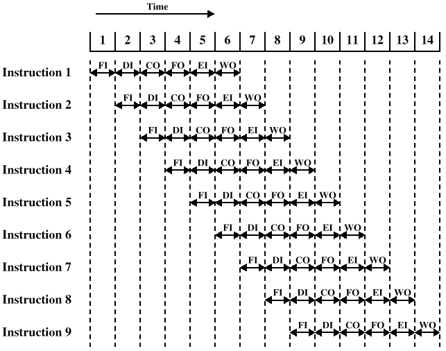
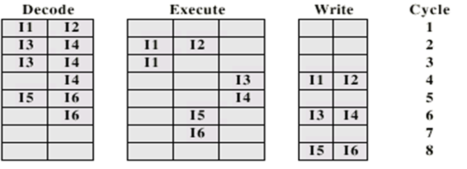
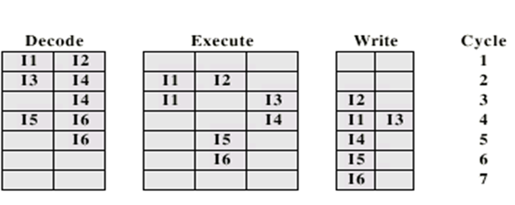
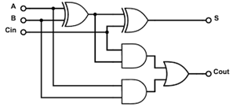

Computer Systems I
Matthew Barnes
Contents
Physical 9
Intro to CPU structure 9
Definition 9
Functions of a CPU 9
Structure 9
Registers 9
User visible registers 10
Control registers 10
Assembler, C -> ARM 10
Data flow 11
Computer interfaces 12
Types of input 12
Analogue inputs 12
Converting analogue to digital 12
Quantisation 12
How does ADC work? 13
DAC 13
CISC and RISC 13
Architectures 13
Von Neumann Architecture 13
Harvard Architecture 14
RISC 14
CISC 15
Pipelining and branch prediction 15
Pipelining 15
Dealing with branches 16
Multiple Streams 16
Prefetch Branch Target 16
Loop buffer 16
Branch prediction 16
Delay slot 17
SSE 17
Flynn’s classifications 17
SSE 17
How SSE works 18
Superscalar 18
What is superscalar? 18
Limitations 18
Instruction issues 19
Superscalar requirements 20
Interconnection structure & bus design 20
What is a bus 20
Single bus problems 20
Bus layouts for different units 21
Types of buses 21
Control / Address / Data bus 21
Peripheral Component Interconnect Express (PCIe) 22
Universal Serial Bus (USB) 22
Hard disk buses 23
Parallel ATA (PATA or IDE) 23
Serial ATA (SATA) 23
SCSI 23
Fibre channel 24
I2C 24
Mass storage 24
Magnetic disk 24
Floppy 24
Hard disk 24
Solid State Drives 25
Optical storage and CD-ROM 26
DVD 26
Blu-ray 27
Magnetic tape 27
Storage Area Network (SAN) 27
RAID 27
What is RAID 27
RAID 0 28
RAID 1 28
RAID 0+1 28
RAID 1+0 28
RAID 4 29
RAID 5 29
RAID 6 29
RAID 5+0 30
RAID 6+0 30
Software RAID 30
Hot spares and hot swap 31
Stripe sizes 31
RAID controllers 31
Microcontrollers 31
What is a microcontroller? 31
Embedded systems 32
Input / Output 32
GPIO 32
Analogue to digital inputs 32
Different types of microcontrollers 32
Arduino 32
Microchip’s PIC 32
TI MSP430 32
ARM 33
Cortex M 33
Raspberry Pi 3 details 33
Memory and RAM 33
Location 33
Capacity 34
Unit of transfer 34
Access methods 34
Sequential 34
Direct 34
Random 34
Associative 34
Memory hierarchy 35
Performance 35
Access time 35
Memory cycle time 35
Transfer rate 35
Physical types 35
Semiconductor memory 35
Dynamic RAM (DRAM) 35
Static RAM (SRAM) 36
Read-only Memory (ROM) 36
Double data rate RAM (DDR RAM) 36
Error correction 36
Simple parity bit 37
Flash RAM solid state disk 37
Parallel Processing 37
Amdahl’s law 37
Symmetric multiprocessors 38
Computer cluster 38
Process based message-parsing 39
Thread based message-parsing 39
Instruction level parallelism 39
Main dataflow 40
Code generation 40
PC architectures 41
Chipset 41
Server motherboards 41
Intel QuickPath Interconnect (QPI) 41
Onboard SSD 42
Basic Input/Output System (BIOS) 42
Unified Extensible Firmware Interface (UEFI) 42
Cache 42
Definition 42
Operation 42
Size 43
Instruction / Data split 43
Three level caches 43
Mapping function 43
Direct mapping 44
Full associative mapping 44
Set associative mapping 45
Replacement algorithms 45
Write policies 46
Write-through 46
Write-back 46
Cache coherence 46
Intel’s latest CPUs 46
Multi-core CPU 47
Non uniform memory access (NUMA) 47
Loop detector 47
Hyperthreading 47
Integrated memory controller 48
Power management 48
“Turbo boost” 48
Summary of i3, i5, i7 and Xeon 49
GPUs 49
Definition 49
Why we need GPUs 49
3D rendering pipeline 49
Typical transformation maths 50
Raster operations 50
Comparison to supercomputers 50
GPUs with no graphical output 51
Replacing the pipeline model 51
Onboard Intel GPUs 51
Programming GPUs 51
Uses of GPUs 51
Logical 53
Intro to digital electronics 53
Truth table 53
Logic notation 53
Logic’s relation to electronics 53
Logic gates 53
Boolean algebra 55
Transistors 55
FET transistor 55
MOSFET transistor 56
Flip flops and registers 56
Flip flops 56
Reset-set flip flop (RS) 56
Clocked reset-set flip flop 56
D-type flip flop 56
Registers 57
Reg4 57
Shift registers 58
Serial data transfer 59
Receiving serial data 59
Sending serial data 59
Registers in modern hardware 60
Number systems 60
Definition 60
Convert decimal to binary 61
Convert binary to decimal 61
Convert hexadecimal to binary 62
Convert octal to binary 62
Convert binary coded decimal (BCD) to decimal 63
Arithmetic 63
Unsigned integers 63
Signed integers 63
Sign and magnitude 63
2’s complement 63
1’s complement 64
Biased offset 64
Floating point 65
Exponent field = 0 67
Rounding modes 67
Addition / Subtraction 67
Multiplication / Division 67
Variable types to bitwidths and ranges 68
Gates 68
Gate sizes 68
Gate speed (delays) 68
Glitch generator 68
Inertial delay 69
Karnaugh maps 69
Addition 70
Full adder 70
Ripple adder 70
Carry-lookahead 71
Multicycling 71
Binary multiplication 72
Booth multiplication algorithm 72
ARM and Assembly 74
ARM instruction set 74
Thumb2 74
ARM registers 74
Simple instruction examples 74
Status register 74
Memory access 75
Table 75
Offsetting 75
Looping 75
Stack 75
Subroutine return address 76
Subroutine call with interrupt 76
Return address using stack 76
Return address using LR register 76
LR 76
Networking 77
What is a network 77
Layered network models 77
Layer encapsulation 77
Physical & Link layer 77
Network access layer 78
Internet layer 78
IPv4 79
NAT & NAPT 79
IPv6 79
ICMP / ICMPv6 80
Transport layer 80
TCP and UDP 80
TCP flow / congestion control 80
Application layer 81
Naming and addressing 81
DNS & ARP 81
DNS 81
ARP / NDP 82
Routing 82
Multiple paths 82
Switches 83
Other concerns 83
Monitoring 83
The Internet of things 83
Instruction sets 84
Interpretation of binary data 84
Instruction set 84
Elements of an instruction 84
Instruction types 84
Arithmetic instructions 85
Shift and rotate operations 85
Logical 85
Transfer of control 85
Input / Output 85
Types of operand 85
Instruction set architectures (ISA) 86
Accumulator ISA 86
Stack based ISA 86
Register-memory ISA 86
Register-register ISA 86
Memory-memory ISA 86
Alignment 87
Endedness 87
Address modes 88
Immediate addressing 88
Direct addressing 88
Indirect addressing 88
Multilevel indirect addressing 89
Register addressing 89
Register indirect addressing 89
Displacement addressing 89
Scaled displacement addressing 89
Orthogonality 90
Completeness 90
Operating Systems & Virtual Machines 90
About operating systems 90
Layers and views of a computer system 91
Kernel services 91
Memory management 91
Task management 91
File management 91
Device management 91
Essential hardware features for an OS 92
Memory protection 92
Timer 92
Privileged instructions 92
Interrupts 92
Scheduling 92
Context switching 92
Process control block 92
Memory management 93
Swapping 93
Partitioning 93
Physical and logical addresses 93
Paging 93
Virtual memory 93
Page table sizes 94
Translation lookaside buffer 94
Demand paging 94
Segmentation 94
Amdahl’s Law 95
The principle of locality 95
Disk caches 95
Physical
Intro to CPU structure
Definition
-
Stands for Central Processing Unit
Functions of a CPU
-
Data processing
- Data storage
-
Data movement
- Control
-
Simplified view:
Structure
-
Registers (units of memory for storing values in)
-
Control unit CU (a unit that tells other components what to do)
-
Arithmetic and Logic unit ALU (for maths, mainly floating point)
-
Internal CPU interconnection (the very sticky glue that holds it together)
-
Fetch instructions
-
Interpret (Decode) instructions
- Fetch data
- Process data
- Write data
-
This can be simplified to the ‘fetch - decode - execute’ cycle.
Registers
-
A register is a temporary storage space for the CPU to
store values.
-
They’re big enough to hold a full address, which is
as big as a full word.
-
There are two types:
-
User visible registers
-
Control registers
User visible registers
-
Registers that programmers can freely use like variables in
Assembly
-
They usually have names like R1, R2, R3 ...
-
General purpose registers are a subset of user visible registers. They store
things like the accumulator (the result of a mathematical
operation).
-
There are typically between 8, 16, 32 or 128 GP
registers.
-
They take up processor silicon area, so we can’t have
too many of them.
-
Condition code registers are also a subset of user visible registers.
-
Each bit of a condition code register is a flag, e.g. one
bit could mean last operation was zero, another bit could
mean overflow etc.
-
It can be read, but it can’t be written to by
programs.
Control registers
-
Registers that are not accessible to the programmer. An
example would be the instruction register (it holds the
current instruction) or the memory address register (stores
addresses fetched / to be stored).
-
The only control register that’s visible to assembly
code is the program counter.
Assembler, C -> ARM
|
C
|
ARM Assembly
|
|
main()
{
int a,b,c[50];
b = 2;
for( a= 0; a < 50; a++)
c[a] = a * b;
}
|
mov r3, #2
str r3, [fp, #-16]
mov r3, #0
str r3, [fp, #-20]
b .L2
.L3:
ldr r1, [fp, #-20]
ldr r2, [fp, #-20]
ldr r3, [fp, #-16]
mul r0, r3, r2
mvn r2, #207
mov r3, r1, asl #2
sub r1, fp, #12
add r3, r3, r1
add r3, r3, r2
str r0, [r3, #0]
ldr r3, [fp, #-20]
add r3, r3, #1
str r3, [fp, #-20]
.L2:
ldr r3, [fp, #-20]
cmp r3, #49
ble .L3
sub sp, fp, #12
ldmfd sp, {fp, sp, pc}
|
Data flow
-
Program counter (PC) contains address of next instruction
-
Address moved to Memory Address Register (MAR)
-
Address placed on address bus
-
Control unit requests memory read
-
Result placed on data bus, copied to MBR, then to IR
-
Meanwhile PC incremented by 1
-
-
Depends on the instruction being executed, but it may
include:
-
Memory read/write
-
Input/Output
-
Register transfers
-
ALU operations
-
What happens during an interrupt?
-
Registers like PC are loaded onto a stack
-
Stack pointer is loaded to MAR and MBR written to
memory
-
PC is redirected to the interrupt handling routine
-
Once interrupt has been handled, registers are loaded back
from the stack
-
Processing continues like normal
Computer interfaces
Types of input
- Sound
- Temperature
- Touch
-
Motion (IR etc.)
-
Light, images
- Magnetism
- Acceleration
Analogue inputs
-
Analogue inputs are things like light, sound, temperature
etc.
-
They can be mostly expressed like a wave
-
Computers are purely digital; they cannot read pure
analogue
-
Therefore, to get analogue input, we must convert analogue
to digital
Converting analogue to digital
-
-
Transducer: converts one form of energy into another, e.g. light into
electrical
-
Converter: converts analogue voltage into digital input
-
Analogue-to-digital converter is referred to as ADC
-
Digital-to-analogue converter is referred to as DAC
Quantisation
-
To ‘quantise’ something means to break it up
into ‘steps’.
- Example:
-
-
This red sine wave is of analogue format. However, the blue
wave is a ‘quantised’ version of the red sine
wave because it’s broken up into steps, or
‘quantities’.
-
The left blue wave is more accurate than the right blue
wave because the steps are smaller. The smaller the steps,
the more accurate the conversion is.
-
This ‘quantised’ wave can be represented
digitally. This is how analogue waves are converted into
digital formats.
How does ADC work?
-
All ADCs use one or more comparators, which take in
analogue inputs and produces a digital output depending on
the input
- Example:
-
If voltage 0v to 1v is found, comparator 1 produces
output
-
If voltage 1v to 2v is found, comparator 2 produces
output
-
If voltage 2v to 3v is found, comparator 3 produces output
etc.
-
By doing this, depending on which comparator is outputting,
the converter will know the current range of the analogue
input, and can store it digitally.
DAC
-
Converts digital signals to analogue by estimating curves
given certain heights.
-
Quantises the same way that ADC does, except it goes the
other way round.
- Example:
-
DAC could quantise 5v to about 20 mV
CISC and RISC
Architectures
Von Neumann Architecture
-
Programs and data are stored together in the same
space
-
Harvard Architecture
-
Programs and data are stored in separate memory
locations
-
RISC
-
Reduced Instruction Set Computer
-
Instructions have a fixed length, each executed in a single
clock cycle
-
Therefore, can do pipelining to achieve
one-instruction-per-one-clock-cycle
-
Simpler instructions, increase clock speed, no
microcode
-
More minimalistic
-
Operations are performed on internal registers only.
-
Only LOAD and STORE instructions access external
memory
- MIPS
- SPARC
- DEC Alpha
-
Power PC (IBM)
- PA-RISC
-
Itanium i860/i960
-
88000 (Motorola)
- ARM
CISC
-
Complex Instruction Set Computer
-
Old binary code can run on newer versions
-
Complex instructions, can do more in one instruction
-
More advanced
-
Uses microcode
-
Microcode - hardware-level instructions that implement higher-level
instructions
-
one program instruction takes multiple cycles
-
Variable-length instructions to save program memory
-
Small internal register sets compared to RISC
-
Complex addressing modes, operands can exist in external
memory or internal registers
Pipelining and branch prediction
Pipelining
-
You can overlap the following operations:
-
Fetch instruction
-
Decode instruction
-
Calculate operands
-
Fetch operands
-
Execute instructions
-
Write output (result)
- Like this:
-

-
However, if there is a branch in the pipeline (like an if
statement), the pattern will have to break, similar to
this:
-
-
RISC only has instruction fetch, instruction decode,
execute and memory access, so pipeline stalls on RISC are
less drastic.
Dealing with branches
Multiple Streams
-
You could have two pipelines, and prefetch each branch into
a separate pipeline.
-
So when you reach that if statement, you have two paths
(pipelines) to go through.
- Advantage:
-
It doesn’t break the pattern of pipelining
-
It uses up a lot more memory
-
If there are branches in those pipelines, you’ll need
even more pipelines
Prefetch Branch Target
-
Fetches where the program will branch to ahead of time
(called the target of branch)
-
Keeps target until branch is executed
Loop buffer
-
Stores the previous few instructions in very fast memory
buffer (possibly cache)
-
Maintained by fetch stage of pipeline
-
Check buffer before fetching from memory
-
This is used for executing small loops very quickly
Branch prediction
-
There are 4 ways of performing branch prediction:
-
1) Predicts never taken, assumes that jump will not
happen
-
2) Predicts always taken, assumes that jump will happen
-
3) Predict by opcode
-
Some instructions are more likely to jump than others
-
Is up to 75% accurate
-
4) Taken / Not taken switch
-
Based on previous history
-
Good for loops
-
2-bit predictor:
-
Remembers how often jumps are made
-
Makes future choices based on the past
Delay slot
-
If a program branches elsewhere, the pipelines may still
continue going on the wrong path, executing instructions
called ‘delay slots’, while the other pipelines
are busy fetching and decoding the correct branch.
-
This is to avoid branch hazards. Delay slots exist because
the pipelines must be full of instructions at all times.
This is a side-effect of pipelined architectures.
SSE
Flynn’s classifications
-
SISD - Single Instruction Single Data
-
Performing one instruction on one register
-
Example: pipeline processors
-
SIMD - Single Instruction Multiple Data
-
Performing one instruction on lots of data values
-
Example: GPUs are optimised for SIMD techniques
-
MISD - Multiple Instruction Single Data
-
Performing multiple instructions on one register
-
Example: Systolic array, which is a network which takes in
multiple inputs and uses processor nodes to achieve a
desired result, and works similar to a human brain.
-
MIMD - Multiple Instruction Multiple Data
-
Performing multiple instructions on lots of data
values
-
Example: Multiple CPU cores
SSE
-
SSE stands for Streaming SIMD Extensions
-
It is an extension to the x86 architecture and was designed
by Intel.
-
It adds around 70 new SIMD instructions, used for things
like:
-
image processing
-
video processing
-
array/vector processing
-
floating-point maths
-
text processing
-
general speed-up (depends on application)
How SSE works
-
You put smaller values into one big register, then perform
the SSE instruction. Then, it will perform a certain
calculation on the big register, and in turn, will perform
the same calculation on multiple smaller values.
- Example:
-
You put 8 x 16 bit values into one 128 bit register
-
You put another 8 x 16 bit values into another 128 bit
register
-
Perform the ‘add’ instruction
-
The result will be another 128 bit register, but with all
the added 16 bit values inside it.
-
You’ll now have 8 x 16 bit results in that 128 bit
result!
-
This way, you don’t need 8 add instructions; you only
need 1.
Superscalar
What is superscalar?
-
These instructions do not depend on each other (they share
no registers):
-
(1) R0 = R1 + R2
-
(2) R3 = R4 + R5
-
Yet, traditionally, they are executed like this:
-
Execute (1), then execute (2)
-
However, since they do not depend on each other, you could
execute them like this:
-
Execute (1) and (2) at the same time
-
This is the main gimmick of a superscalar processor.
Limitations
-
Instruction level parallelism
-
When instructions are independent and can be overlapped. It
is a property of the program.
-
Compiler based optimisation
-
It’s up to the compiler to decide where superscalar
techniques are possible.
-
If there are not enough execution resources on the CPU to
perform multiple instructions at one time, it physically
cannot happen.
-
True data dependency (Read-After-Write)
-
When multiple instructions use the same registers:
-
R0 = R1 + R2
-
R3 = R0
-
Similar to true data dependency, but a branch determines
what the shared register will be:
-
IF R0 = 1 THEN
-
When two instructions require the same resources at the
same time.
-
Example: if two instructions require the ALU
-
Output dependency (Write-After-Write)
-
(1) R3 = R3 + R5
- (2) R3 = 1
-
If (2) is completed before (1), then (1) will have the
incorrect output. This is output dependency. This can be
fixed with register renaming.
-
Anti-dependency (Write-After-Read)
-
(1) R3 = R3 + R5
-
(2) R4 = R3 + 1
-
(3) R3 = R5 + 1
-
(3) cannot be executed before (2) because (2) needs the old
value of R3 and (3) overwrites R3. This is anti-dependency.
This can be fixed with register renaming.
Instruction issues
-
There are 3 ways superscalar processors can decode and
execute instructions:
-
In-Order Issue In-Order Completion
-
All instructions are decoded and executed sequentially.
This is the least efficient, but it gives the other 2 a
frame of reference in terms of performance.
-

-
In-Order Issue Out-of-Order Completion
-
All instructions are decoded in order, but they can be
executed at the same time. Output dependency is a problem
here.
-

-
Out-of-Order Issue Out-of-Order completion
-
Continues to fetch and decode as much as it can until
decode pipeline is full. Then, when an execution resource is
available, it’ll execute the next stored instruction.
This is typically the most optimised way to decode and
execute instructions.
-
Superscalar requirements
-
To support superscalar techniques, a processor must:
-
simultaneously fetch multiple instructions
-
be able to determine true dependencies with registers
-
be able to execute multiple instructions in parallel
-
have the mechanisms to process in the right order
Interconnection structure & bus design
What is a bus
-
All the units in a computer need to be connected somehow.
-
These connections are called ‘buses’.
-
They’re like special paths on which data travels on
from one unit to another.
-
They don’t carry 1 bit, like a copper wire;
they’re typically a few words long, so they’re
more like a ribbon cable. Each path the bus has is called a
‘line’. Buses have around 50+ parallel
lines.
-
Different types of connections are needed for different
types of units:
Single bus problems
-
If a device uses only one bus, it could lead to problems,
such as:
-
Long paths could mean that coordination of bus transfer
could affect performance
-
Certain data transfer could exceed bus capacity
-
Different devices work at different speeds, so they will be
out of sync.
-
Therefore devices tend to use multiple buses.
Bus layouts for different units
|
Unit
|
Buses
|
|
Memory
|

|
|
I/O module (mouse, CD drive etc.)
|

|
|
CPU connection
|

|
Types of buses
Control / Address / Data bus
-
These types of buses are common to all units.
-
Control bus
-
Controls access to the data and address lines. Each line
has a different use:
-
Memory read/write signal
-
I/O Port read/write signal
-
Transfer Acknowledgement
-
Bus request/grant
-
Interrupt request/acknowledgement
-
Clock signals
- Reset
-
Typically, each line (or each bit) would represent one of
these flags.
-
This is usually hidden from the programmer.
-
Carries the address of the related data. This is especially
prominent in RAM and disks. The number of lines this bus has
is a big factor for spatial capacity, because you can refer
to bigger addresses.
-
Modern CPUs can have 40-bit addresses (1TB).
-
Carries data from one unit to another. The number of lines
in this bus is a big factor for performance, since it would
be able to transfer more data per clock cycle.
Peripheral Component Interconnect Express (PCIe)
-
PCI was a type of bus that connected the processor, the LAN
adapter, all the peripherals, everything.
-
It’s not used so much anymore.
-
Now, we have PCIe.
-
It is a serial bus with 0.25 - 1 Gbyte/s channels
-
Version 4 bumped it up to 2GByte/s in 2017
-
Version 6 bumped it up to 8GByte/s in 2019
-
There are 2 - 32 channels per bus
-
You’d typically use this for a graphics card (16 =
5.6GB/s)
Universal Serial Bus (USB)
-
Ideal for low-speed I/O devices
-
Simple configuration, simple design
- Speeds
-
usb2: 480 Mbit/s
-
usb3: 4.8 Gbit/s
-
usb4: 10-40 Gbit/s
-
The USB system forms a sort of ‘tree’
structure.
-
You can add USB hubs and extend the tree structure.
-
USB cable contains four wires
-
2 data lines
-
1 power (+5 volts) & 1 ground
-
“0” is transmitted as a voltage
transition
-
“1” as the absence of a transition
-
Thus, a sequence of “0”s forms a regular pulse
stream, like this: “0101010101010101010”
-
A sequence of “1”s would form something that
looks like this: “0000000000” or this:
“1111111111111”
-
Every 1.00 ± 0.05 ms, the root hub broadcasts a new
frame. This is how the root hub ‘communicates’
with the node devices.
-
If no data is to be sent, just a “Start of
Frame” packet is sent, which does nothing
-
Data associated with one addressed device, either to or
from hub
-
Four kinds of frames:
- Control
-
Used to configure devices & inquire status
-
For real-time devices where data should be sent/received at
precise intervals
-
USB does not support “interrupts”, so this
frame is used for regular polling of devices, e.g. polling a
keyboard every 50 ms.
Hard disk buses
Parallel ATA (PATA or IDE)
-
PATA is a way of connecting devices to a bus
controller.
-
Only has 2 channels per controller (often 2) hence 4 device
limit.
-
2, 11, 16, 33, 100, 133 MByte/s bandwidth
-
Now mainly seen in old PCs for old optical/CD/DVDs
Serial ATA (SATA)
-
A type of serial computer bus interface that connects a
host adapter to things like hard disk drives, optical drives
and solid state drives.
SCSI
-
A set of standards for physically connecting and
transferring data between computers and peripheral
devices.
-
Was mainly used in servers throughout the 80’s and
90’s
-
1 to 15 devices per channel
-
10, 20, 40, 80, 160, 320 MB/s
-
10 – 640 MB/s
-
SCSI disks still available – usually high speed
-
Newer iSCSI also common now
-
Uses tcp/ip and, typically, Ethernet cables
-
Newer SAS – serial attached SCSI
-
Very common now
-
Fast serial SCSI, compatible with latest SATA,
3-6Gbit/s
Fibre channel
-
Fibre-channel SCSI can use fibre!
-
2Gbit/s ie aprox. 200MByte/s bandwidth
-
allows distant disk arrays
I2C
-
Simple two wire bus for small slow peripherals like
sensors, fans etc
-
Single data line and one clock line
-
The single data line is used to send and receive
Mass storage
Magnetic disk
-
Metal/glass/plastic disk coated with magnetizable material
(like iron oxide)
-
Different types of magnetic disk:
Floppy
-
A small, square/rectangular type of magnetic storage
-
(old: 8”, 5.25”), 3.5”
-
Small capacity: 1.44Mbyte
-
Slow but cheap
Hard disk
- Universal
- Cheap
-
Fast external storage
-
Especially in RAID
-
Getting larger
-
Multiple Terabyte now usual
-
Hard disks have multiple discs inside it, each with tracks
running through it.
-
Each track is split up into sectors. A sector is the
smallest unit of storage a disc has.
-
These sectors contain data.
-
Data is read by a ‘head’, which has a magnetic
sensor that reads the sectors.
- Speed:
-
Moving head to correct track
-
(Rotational) latency (eg 4ms)
-
Waiting for data to rotate under head
-
Access time = Seek + Latency
-
Modern disks have 8 - 128 MB on-board RAM
buffer/cache
-
Used to store whole tracks and cache r/w
-
acts as a buffer between disk and external I/O
-
Current disk range
-
6 - 14TB are largest disks now
-
10-15 k rpm fastest spins
-
Sustained data rates 150-170 MBytes/s
-
average access time 3.6 – 8 ms
- 8-12W power
-
15k rpm are normally only 600GB
-
2.5” typically 5400rpm and slower access: 11ms
-
Some have onboard Flash cache (eg 256MB)
-
1” Eg IBM Microdrive PCMCIA (historic)
- Around 1GB
-
3600rpm, 12ms access, around 6MB/s.
-
Mean time between failures (MTBF) = 114 yrs
-
Chance that fast disk will fail after 1 year = 0.5%
Solid State Drives
-
non volatile NAND logic (fast) or Flash based
- expensive
-
but fast access speeds, say 0.1ms
-
Near "zero" latency compared to HDs
-
sequential speed: 500-3000 MB/s
-
Transactions/s (IOPS) often quoted (eg 90000)
-
max about 1-4TB at the moment
-
more shock resistant, silent, lower power
-
can only write approx Millions of times
-
wear levelling – spreads the writes around so one area is not
worn out
-
overprovision - spare storage
-
file systems consider SSD issues:
-
TRIM command to tell SSD which blocks are not needed and
can be "erased"
-
erase normally only works on blocks
-
they need up to date firmware and drivers
Optical storage and CD-ROM
-
Originally for audio
-
650Mbytes giving over 70 minutes audio
-
Polycarbonate coated with highly reflective coat, usually
aluminum
-
Data stored as pits
-
Read by reflecting laser
-
Constant packing density
-
Constant linear velocity
- Format:
-
-
Mode 0=blank data field
-
Mode 1=2048 byte data+error correction
-
Mode 2=2336 byte data
-
Random Access is difficult on a CD because it’s
designed for sequential access.
-
Therefore, it’s more efficient to package everything
and read one big file (e.g. zip or tar.gz).
DVD
- Multi-layer
-
Very high capacity (4.7G per layer)
-
Full length movie on single disk
-
Using MPEG2 compression
-
Movies carry regional coding and copyright
-
Players only play correct region films
- CD vs DVD:
-
-
Single-layer vs Dual-layer
-
-
At first, writable DVDs had trouble with standards.
-
Now various standards generally coexist.
Blu-ray
-
Use 405nm laser – hence smaller features
-
15-30GB still useful for offline storage/transfer
-
128GB 4 layer versions exist
-
Can read at 70MB/s
Magnetic tape
-
Serial access
-
Slow - speed often quoted in GB/hour
- Very cheap
-
Backup and archive
Storage Area Network (SAN)
-
Like disks – block accessed
-
ie not like NAS which is a file server
-
Fast and low latency
-
Starting to use 16Gbit/s fibre channel
-
Can use 12 TB drives or even SSD
RAID
What is RAID
-
RAID stood for Redundant Array of Inexpensive Disks, but
now it stands for Redundant Array of Independent
Disks.
-
They’re ways of distributing data across multiple
physical drives
RAID 0
-
Different ‘strips’ are distributed across all
hard disks
-
Size is N * disk size
-
RAID 1
-
Two disks are mirrored
-
If one is faulty, just swap it and remirror it
-
The size is N * disk size / 2 (since 50% of the total
storage is being used)
-
RAID 0+1
-
You have two RAID 0 systems, and you mirror them together
using RAID 1
- Size: N / 2
-
RAID 1+0
-
You mirror every drive with RAID 1, and you use a RAID 0
system on them all as if they’re individual
drives
- Size: N / 2
-
RAID 4
-
Kind of like RAID 0, but with blocks instead of
stripes
-
Allocates 1 parity drive
- Not used now
-
RAID 5
-
Like RAID 4, but the parity blocks are dynamically assigned
to the data drives through round robin
-
It uses the recovery mechanism of XOR for parity (in the
XOR truth table, if a column is lost, you can XOR the other
two remaining bits to get the missing one)
-
Even though parity is distributed over multiple disks, the
size is still N - 1
-
RAID 6
-
Like RAID 5, but has a double parity write, so it can
tolerate two disk failures
-
The size is N - 2
-
RAID 5+0
-
Multiple RAID 5 systems, all encapsulated under a RAID 0
system.
-
RAID 6+0
-
Multiple RAID 6 systems, all encapsulated under a RAID 0
system.
-
Software RAID
-
You can do RAID through software as well, but it takes more
CPU power.
-
However, this is available to most OSs.
Hot spares and hot swap
-
A hot spare is a disk which is not used by the RAID
system at first. In case of a failure, the system recovers
the data on the failed disk (using something like XOR for
RAID 5), and fills it in the hot spare. In other words, the
disk sits there doing nothing until one of the other disks
fail.
-
Typically, the broken disk gets replaced with a new one
which takes over the role of the hot spare.
-
In a RAID system that cannot recover data, like RAID 0, a
hot spare would be useless.
-
You can pull out a faulty disk and replace it while the
system is running.
-
When drives go faulty, the RAID system needs time to
rebuild. This is where hot swapping and hot sparing can
prevent downtime.
Stripe sizes
-
Files are spread over more disks
-
Decreases I/O rate performance
-
Increases transfer rate
-
Files tend to be on fewer/one disk/s
-
Better for I/O rates
-
Lower transfer rates
RAID controllers
-
Carry out SCSI channel and cache management
-
Many have >64MB of cache!
-
Take the load off the CPU and speed-up writes
-
Often have battery-backed-up cache
-
Can migrate from one level to another
-
RAID systems often have dual power supplies
Microcontrollers
What is a microcontroller?
-
A microcontroller is a self-contained computer on a
chip.
-
A microcontroller has:
-
CPU, memory, clock, I/O
-
often 8 or 16 bit word sizes - some now 32 bit word
sizes
-
slower clock eg: 32kHz – 100MHz
- small RAM
-
very low power
-
They are cheap (billions sold each year) and make up 55% of
all CPUs sold
-
Their memory is very limited:
-
registers – eg 64
-
SRAM: as low as 1k
-
Flash/EEPROM: 16-64k for programs
-
They are designed to run on about 1mA
Embedded systems
-
Microcontrollers are usually embedded into other systems
and are preprogrammed, like washing machines, printers, cars
and even clothes.
Input / Output
GPIO
-
General Purpose Input Output
-
Useful for things like switches
Analogue to digital inputs
-
Converts analogue signals into numbers
-
Used for sound, light etc.
Different types of microcontrollers
Arduino
-
Atmel ATMega series chips e.g ATMega1280, ATMega328P
-
easily accessible I/O
-
8k RAM, 16MHz, 128k Flash
-
Uses a variation of C
- Arduino Uno:
-
ATMega328P cpu
- 2KB SRAM
- 32KB flash
- Very popular
Microchip’s PIC
-
from 8 bit, 4MHz
-
to PIC32: 32 bit 80MHz, 32k SRAM, 512k Flash
-
used in PicAxe – for hobby electronics – which
runs Basic!
TI MSP430
- 16 bit
-
von Neumann architecture
-
CC430 includes onboard radio
ARM
-
RISC family started in 1983
-
families: cortex-M, R and A (application)
-
more powerful: clock/RAM/32bit/cache
-
A series can address 4GB and has 3-5 stage pipeline
-
large memory means it can run OS like Linux or Windows
Mobile if needed
-
very common in mobile phones
-
approx 0.5mW/MHz
Cortex M
-
M0+ very low power, slower
-
48-96MHz typical
- 1-96 kB RAM
-
1-256kB flash
-
M4 fast, powerful (eg FPU, DSP etc)
- 50-180 MHz
- 16-256kB RAM
-
32k to 2MB flash
Raspberry Pi 3 details
-
The Raspberry Pi is more of a single board computer than a
microcontroller.
-
1.2GHz 64 bit quad-core A53 SoC (quoted as 2760 DMIPS each
core)
- 1GB RAM
-
VideoCore IV graphics core
-
802.11n WiFi, Bluetooth 4.1/le
-
100 Mbit/s Ethernet, USB 2
-
HDMI video out
- Micro-SD
- Audio i/o
-
Camera interface
-
Display interface
- 40 GPIO pins
Memory and RAM
Location
Capacity
-
The capacity of memory is expressed in words, or
bytes.
Unit of transfer
-
Usually governed by data bus width
-
Usually a block which is much larger than a word
-
Smallest location which can be uniquely addressed
-
Word internally
Access methods
Sequential
-
Start at the beginning and keep reading forward by 1 until
you reach the desired address.
-
Speed is dependent on location of memory
-
Not used nowadays
-
Example: tapes
Direct
-
Individual blocks have a unique address, then a further
address in that block points to the desired data.
-
Example: graphics cards
Random
-
Individual addresses are located exactly; no blocks
-
Access time is independent of location or previous
access
- Example: RAM
Associative
-
Compares input search data with a table that contains
pointers to the addresses of interest
-
Example: cache
Memory hierarchy
Performance
Access time
-
Time between presenting the address and actually getting
the data
Memory cycle time
-
Time for the memory to ‘recover’ after
retrieving data
-
Cycle time = access + recovery
Transfer rate
-
Rate at which data can be moved
Physical types
Semiconductor memory
-
Memory that uses semiconductor-based integrated
circuit
- RAM:
- Read/Write
-
Volatile – loses all data on power off
-
Temporary storage
-
Static or dynamic types
Dynamic RAM (DRAM)
-
In DRAM, each bit is stored as a charge in a
capacitor.
-
However, since capacitors lose their charge, they have to
be ‘refreshed’ using refresh circuits. This
slows down performance.
-
If the capacitors are not “refreshed”, data can
be lost. Therefore, when power is no longer supplied to
DRAM, all the data is lost.
-
Simpler construction
-
Smaller per bit
-
Less expensive
-
Slower (6-60ns)
- Main memory
Static RAM (SRAM)
-
Each bit is stored as an on/off switch, so there’s no
need to refresh.
-
Even though there’s no need to refresh, data is still
lost when SRAM loses power.
-
More complex construction
-
Larger per bit
-
More expensive
-
Faster (<1ns)
-
Good for Cache
Read-only Memory (ROM)
-
Read-only memory is a type of memory that isn’t meant
to be changed.
-
It’s perfect for permanent storage and hardware
libraries.
-
Types of ROM:
-
Programmable Read-only Memory (PROM):
-
You need special equipment to program it
-
Electrically Erasable Programmable Read-only Memory (EEPROM):
-
Takes a lot longer to write than read
-
You can erase it and program it again if you need to
-
Flash memory (Not really ROM):
-
Erase whole memory electrically
-
Can be used as slow RAM
Double data rate RAM (DDR RAM)
-
Double data rate means that data is transferred on the rise
AND fall edges of the clock cycle.
-
This means double the data rate than normal!
-
When RAM uses this technique, it’s called DDR
RAM.
-
DDR3 is faster than DDR2 because it has wider paths
-
Error correction
-
Eg 25k failures per Mbit per billion hours
-
Permanent defect – the most common
-
Random, non-destructive
-
No permanent damage to memory
-
Detected (and fixed) using error correcting code
Simple parity bit
-
An extra bit is added to the end of a byte to show if the
number of 1’s is even or not.
-
The extra bit is 1 if they are even, and 0 if they are
odd.
-
This can spot errors, but it can’t fix them and it
can only detect an even number of wrong bits.
- Example:
-
010110011 <- this is fine
-
011010000 <- this is fine
-
010011100 <- this is not fine
Flash RAM solid state disk
-
You can use non volatile flash RAM – typically very
fast random access (0.01ms)
Parallel Processing
Amdahl’s law
-
- Where
-
Tp = Total effort (time) required to complete a
task
-
Ws = Bits that absolutely have to be done
sequentially
-
Wp = Bits that can be done in parallel
-
P = Number of cores
-
Intuitively, you’d think the more cores you have, the
faster your computer is.
-
In reality, due to Amdahl’s law, your processing
capabilities limits as you increase the number of cores:
-
-
Amdahl’s law suggests that it’s more efficient
to apply small speedups on a bigger part of the CPU than it
is to apply a big speedup to smaller parts of the CPU.
Symmetric multiprocessors
-
Symmetric multiprocessing is a MIMD system in which
multiple processors share the same memory and have access to
all I/O devices controlled by a single operating system
instance.
-
Hardware manages contention
-
Increases performance especially multiuser/thread
-
Reasonably scalable until bus is saturated (full)
-
Computer cluster
-
A computer cluster is a group of computers all connected
together working on the same problem.
-
It is controlled by software.
-
It is easy to build (press x to doubt), very fast, has very
large storage, but it uses up a lot of power and it is
expensive.
-
Process based message-parsing
-
Messages can be sent to and from different processes
-
However there are problems:
-
Deadlock - if one process is waiting for the message to be
acknowledged and the other process is waiting for the
message, they will end up waiting forever
-
Buffer overflow - if the buffer of the processes are full,
it can cause problems
Thread based message-parsing
-
Similar to process based message-parsing, but two threads
from the same program communicate with each other.
-
This is useful because both threads can see all process
resources.
-
However, there is massive potential for data contention and
collision.
-
Avoiding this is the responsibility of the system
architect.
-
Multi-threaded: the notion of "you are here" (the
PC) becomes multi-valued (it’s harder to track the
progression of execution with multi-threading)
Instruction level parallelism
-
This is a type of parallelism that relies on software (more
specifically, the compiler), and is invisible to the
user.
-
This requires special hardware.
-
Instruction level parallelism is similar to the concepts of
SSE.
-
If you had this piece of code:
-
Normally you would need two instructions that require the
ALU, right? Because you’re adding twice.
-
However, with instruction level parallelism, the compiler
could decide to append the values of ‘b’ and
‘c’ together, and ‘y’ and z’
together, then add the two amalgamations, then split it
afterwards.
-
By doing that, only one instruction needs the ALU. The rest
is just bit manipulation, which would generally be
faster.
Main dataflow
-
A naive compiler will compile a program, and have every
instruction execute one at a time, one after the
other.
-
This can be represented as a ‘datapath’ graph,
which is like a timeline of instructions. It represents a
program’s execution.
-
This means the program will work perfectly, but it’s
not very optimised.
-
This is why compilers optimise code through ‘code
generation’.
Code generation
-
The compiler will compress the datapath diagram as much as
possible:
-
-
Now the compiler can see what types of instructions it
needs.
-
All the fundamental instructions like
‘multiply’, ‘minus’,
‘plus’ is no problem.
-
However, at control step 5, the program will need to divide
two values at the same time. Does the system have an
instruction like that?
-
Additionally, the program will have to multiply 3 times and
subtract at the same time at control step 0. Does the system
have an instruction like that?
-
The same can be applied to control step 4.
-
If the compiler doesn’t have those, the compiler will
spread out the datapath nodes, so that the instructions are
a little more simple:
-
-
At control step 1, the program must multiply twice. Does
the system have an instruction like that?
-
The same thing can be applied to control steps 5, 4 and
3.
-
The compiler keeps reducing the datapath until all of the
required instructions are present in the system. This is one
of the ways compilers optimise your code.
PC architectures
Chipset
-
A chipset is a set of electronic components on an
integrated circuit that controls various components, like
the processor, memory, peripherals etc.
-
It exists on the motherboard.
-
There are two parts to the chipset:
-
Controls things like the processor, memory, high-speed PCIe
slots (mainly for graphics cards) etc.
- Fast
-
Controls things like PCIe slots (mainly for things like
network cards or sound cards), BIOS, USB, Ethernet, CMOS
(responsible for keeping the date as well as some important
hardware settings) etc.
Server motherboards
-
More memory slots (eg 1TB RAM!)
-
ECC RAM – error correcting
- Onboard RAID
-
Dual/quad sockets for many CPUs
-
Web accessible - 10GB/s Ethernet
Intel QuickPath Interconnect (QPI)
-
QPI is a type of point-to-point processor interconnect
developed by Intel.
-
This means that this technology connects processors
together.
-
Typically ~20 data lines/lanes
-
80 bit “flit” (packet) transferred in 2
clocks
-
Includes error detect/correct & 64bits data
-
2.4 to 4.8GHz clock
-
Allows multiple CPU chips on motherboard
Onboard SSD
-
6Gbit/s sata3 is about 600MBytes/s – this is a real
bottleneck for solid state drives!
-
Other bus types, like:
-
M.2 is the form factor (connector), NVMe is the
protocol. But NVMe drives use the PCIe bus, whether they are
in M.2 form factor or on traditional PCIe expansion cards.
There are also SSDs in M.2 form factor that use a SATA
connection rather than NVMe.
- PCIe
-
all attempt to make new SSD interface fast enough
(>1GB/s!)
-
PCs don’t even need SATA now!
Basic Input/Output System (BIOS)
-
The BIOS is a piece of firmware on the motherboard that
initialises hardware and performs start-up tests. It is the
first thing that runs when the system is turned on.
-
The BIOS is stored in flash so that it can be
updated.
-
After the BIOS initialises the hardware and has completed
all the start-up tests, it searches the storage devices for
a ‘boot loader’.
-
A boot loader is a piece of software that tells the BIOS
how to load up the operating systems. An example would be
GRUB (commonly used for dual-booting Linux).
Unified Extensible Firmware Interface (UEFI)
-
UEFI replaces BIOS.
-
CPU-independent, meaning it can run on ARM, Intel, AMD
etc.
-
Supports 64 bit systems
-
Boot services and Runtime services
-
It stores things like date, time, NVRAM (non-volatile RAM,
so UEFI can store things)
-
GOP – graphics output protocol, which gives the UEFI
the ability to display a GUI, as opposed to BIOS which
relied on a coloured terminal.
-
Does not rely on boot sector (uses NVRAM data to boot
OS)
Cache
Definition
-
Cache is a small amount of memory used to make memory
retrieval quicker.
-
Sometimes, fetching things from RAM isn’t fast
enough. This is why cache is used.
-
Cache stores often-used pieces of data so that the CPU can
fetch it much quicker.
-
It is located between RAM and the CPU, sometimes even on
the chip itself.
Operation
-
CPU first requests data from an address
-
If the cache has the data from that address, then the cache
gives it to the CPU and is known as a
‘hit’.
-
If the cache does not have it, then the cache gets it from
the RAM (slower) and is known as a ‘miss’.
-
The cache then stores that data, and gives the data to the
CPU.
-
There are three levels of cache: L1, L2 and L3.
-
L1 is the fastest but the smallest, L3 is the slowest but
the biggest and L2 is in between.
Size
-
More cache is faster
-
In complex caches, looking up data takes up time
Instruction / Data split
-
First-level cache is split up into instruction-level cache
and data-level cache. Instruction-level cache is
read-only.
-
Three level caches
-
Third-level cache is shared between all cores, whereas each
core will have their own level 1 and 2 cache.
-
Mapping function
-
Cache is a lot smaller than RAM. This is why you cannot
have a one-to-one relation between the records in RAM and
the records in cache; there’s just too many slots in
RAM compared to slots in cache.
-
Because of this, we need to ‘map’ slots in
cache to slots in RAM. There are two ways to do this.
Direct mapping
-
Direct mapping uses a ‘mod’ operation to point
slots in RAM to slots in cache.
-
(This image is used in the following examples)
-
If the system needed to cache index ‘0’ in RAM,
it would put it in ‘0’ in cache.
-
If the system needed to cache index ‘4’ in RAM,
it would put it in ‘0’ in cache.
-
If the system needed to cache index ‘5’ in RAM,
it would put it in ‘1’ in cache etc.
-
But how would you know which address the cache came
from?
-
To know which address the cache value came from, it
includes a ‘tag’ partition in its data. This
‘tag’ partition stores the quotient of the
‘mod’ operation.
- Example:
-
Main memory 0 = Cache memory 0, tag 0
-
Main memory 1 = Cache memory 1, tag 0
-
Main memory 2 = Cache memory 2, tag 0
-
Main memory 3 = Cache memory 3, tag 0
-
Main memory 4 = Cache memory 0, tag 1
-
Main memory 5 = Cache memory 1, tag 1 etc.
Full associative mapping
-
This is a pretty basic mapping technique.
-
This splits the memory address into two parts: a tag and an
offset. The most significant bits make up the tag and the
least significant bits make up the offset.
-
To place a block in the cache:
-
The system scrolls through each slot in cache, looking for
a non-valid (vacant) slot. If it’s there, it will put
the data in there.
-
To search a word in the cache:
-
The tag field of the memory address is compared with the
tag bits in the cache slots. If it exists somewhere in the
whole cache, the offset is compared and the data is taken
from cache. If not, it is fetched from RAM using an
offset.
Set associative mapping
-
Similar to direct mapping (as it still uses mod), but
instead of mapping RAM slots to individual cache slots, it
maps RAM slots to a partition of cache memory. All
partitions are the same size, and are called
‘sets’.
-
(This image is used in the following examples)
-
If we needed to cache RAM index 0, we can put it in either
cache index 0 or 1.
-
If we needed to cache RAM index 1, we can put it in either
cache index 2 or 3.
-
If we needed to cache RAM index 4, we can put it in either
cache index 0 or 1 etc.
-
How would you know which address the cache came from?
-
Like direct mapping, the cache will store a
‘tag’ partition, which stores the quotient of
the mod operation.
-
By looking at the tag and what cache partition it is, you
can decide what cache slot points to what RAM slot.
- Example:
-
Tag 0, cache partition 0 = RAM slot 0
-
Tag 0, cache partition 1 = RAM slot 1
-
Tag 1, cache partition 0 = RAM slot 2
-
Tag 1, cache partition 1 = RAM slot 3
-
Tag 0, cache partition 2 = RAM slot 4
-
The image above is an example of two-way set associative
mapping (because each set is of size 2), but most commonly,
8-way is used.
Replacement algorithms
-
A replacement algorithm is an algorithm that decides
whether or not a piece of data replaces another piece of
data in the cache.
-
Direct mapping:
-
There is only one replacement algorithm here.
-
Since each line in RAM belongs to one line in cache, the
system will have to replace the line in cache if it needs
to.
-
Full / Set associative mapping:
-
Least recently used (LRU)
-
Stores the data in cache as well as a timestamp.
-
If a piece of data is hardly ever used, it is
replaced.
-
First in first out (FIFO)
-
Replace the block that has been in the cache the
longest
-
Like a queue
-
Take out the block that has had the fewest hits
Write policies
-
A block from RAM is stored in cache. However, the data in
that block needs to be updated to a new value. What should
the system do?
-
Additionally, an I/O device may interact with RAM directly,
leaving cache to store old values.
-
The rules surrounding these problems are called
‘write policies’. Cache can deal with this in
two ways.
Write-through
-
All writes go to RAM and the cache as well.
-
Multiple CPUs can monitor RAM and cache to make sure
it’s up to date.
-
This fixes the problem, but it’s slow and has high
traffic.
Write-back
-
Updates initially go to the cache only, and flags them for
update.
-
Then, when the cache blocks are modified/replaced, the
update flag will tell the system to update the RAM.
-
For this to work, I/O must access cache first, not
RAM.
Cache coherence
-
Let’s just say there are two caches between two
processors, with one main memory.
-
The CPU wants to fetch the value X, which has the number 5.
Cache 1 now has X = 5, and cache 2 now has X = 5.
-
The CPU then wants to add 3 to X. The first processor
executes this, and with the first cache, gets the value 8.
Cache 1 now has X = 8.
-
The CPU then wants to add 7 to X. The second processor
executes this, and with the second cache, gets the value 12.
Cache 2 now has X = 12.
-
Cache 1 and cache 2 now have inconsistent values of X. This
is the problem which cache coherence prevents.
-
There exists MESI protocols like "Snooping" which
are usually built-in to enforce cache coherence.
Intel’s latest CPUs
Multi-core CPU
-
Multiple processors, called ‘cores’, can be put
into one CPU, making it a multi-core CPU.
-
Multi-core is efficient as the integration is all in one
chip.
Non uniform memory access (NUMA)
-
Separate blocks of RAM
-
Local Ram is fast
-
Remote Ram is accessible but slower
-
Mechanisms include ccNUMA (cache coherency)
-
Helps reduce bottlenecks
-
Useful with large number of cores or clusters
-
Loop detector
-
Loops are detected in a buffer so that pipelining can be
used.
-
Now, it looks at micro-operations
-
Sometimes, the loop detector unit can optimise.
Hyperthreading
-
A core can look like two cores, and take twice as much
traffic
-
Separate threads can run on the same core
-
Hyperthreading fills execution units with tasks from
another thread as well
-
More efficient use of units
-
It is not the same as having a second core! Even if OS
reports double the cores
-
One physical core, multiple logical cores
-
There are limited execution units
-
Hyperthreading is used on i7 processors.
Integrated memory controller
-
This controls the flow of memory between processors. By
using a QPI bus, memory connected to a processor can reach
another processor.
-
Used to be on motherboard chipset
-
Makes scalability easier as each CPU can have its own bank
of RAM
-
Remote access is 60% slower
-
Power management
-
Separate microcontroller looks after power
-
Can shut down cores completely
-
Can boost clock when needed and if it’s cool
enough
-
L1 & L2 caches use more transistors each bit to save
power
-
“Turbo boost”
-
Basically clock speed increased for short bursts or if only
one core is in use
-
Depends on temperature/power
-
Used on i7 and i5 CPUs
-
e.g. Skylake Core i7-6920 2.9GHz:
-
1 core active 3.8 GHz
-
2 cores active 3.6 GHz
-
3 or 4 active 3.4 GHz
Summary of i3, i5, i7 and Xeon
GPUs
Definition
-
Stands for Graphics Processing Unit
Why we need GPUs
-
Your typical screen resolution: 1920x1080 = 2 Million
pixels.. 6MB
-
3D shading and drawing requires lots of maths per pixel
(especially matrix operations)
-
Typically, all the operations are the same. It’s just
that there’s a lot of pixels to do them on.
-
CPUs are not very efficient at this repetitive task which
can be done in parallel
3D rendering pipeline
-
Model transformation
- Lighting
-
Viewing transformation
- Clipping
-
Projection transformation
-
Scan conversion
Typical transformation maths
-
-
This is a perspective transformation (so objects vanish
into the distance etc.)
-
When you break this down into elementary operations, this
turns into a lot of multiply, add, sin/cos etc. maths for
each set of coordinates.
Raster operations
-
More pixel operations than vector/3D
-
e.g. blends, stencils, per-pixel shading
-
Comparison to supercomputers
-
Early GPUs had parallel graphics pipelines, but now
they’ve moved to be more programmable. Now, they do
hundreds of billions of operations per second.
-
While clock speeds are only around 1 GHz…
-
Number of compute units is thousands
-
Bus width 256-768 bits wide or more
-
May need 400W of power!
-
Nvidia GTX 1080 => 4 teraflops
-
AMD radeon pro WX9100 => 12 teraflops
-
That’s a lot of floating point operations every
second!
-
Because of this processing power, GPUs are often used in
supercomputers.
GPUs with no graphical output
-
Nvidia tesla:
-
Kepler architecture designed more for number crunching (3-9
Tflops)
-
Performance of nvidia tesla models (green) compared with
CPU (blue)
-
Replacing the pipeline model
-
The GeForce 7800 GTX had 24 pixel shaders. However, the
raster operations were heavily used sometimes, leaving the
pixel shaders doing nothing.
-
That’s a waste, which is why general-purpose units
evolved.
Onboard Intel GPUs
-
About 1/10th performance of a separate GPU
-
New generation has reached the same level as mid-range
separate GPUs (i7’s HD650 is about 1Tflops)
-
Good for lower power desktops/laptops
Programming GPUs
-
3D – use OpenGL, DirectX etc.
-
For maths/compute - OpenCL is cross platform or CUDA
for Nvidia only
-
Very useful for general number crunching
Uses of GPUs
-
Video compression
-
Image processing
- Modelling
-
Autonomous vehicles
- Consoles
-
Machine learning algorithms
-
Many repeated computes
-
Over many inputs
-
Ideal for GPUs!
Logical
Intro to digital electronics
Truth table
-
A truth table is a way to show the input, outputs and
patterns of a boolean formula.
-
Example with AND:
-

Logic notation
-
+ and . are used for OR/AND
-
A + B is A or B
-
A . B is A and B
-
¬ can be used as ‘NOT’, as well as a dash
above the letter, a bar above a letter or statement can also
indicate ‘NOT’.
- ¬A is NOT A
-
A’ is NOT A
-
Ā is NOT A
-
⊕ can be used as ‘XOR’ also known as EXOR
(exclusive OR).
-
A ⊕ B is A exclusive or B
Logic’s relation to electronics
-
0 -> low voltage
-
1 -> high voltage
-
Everything is either a 1 or a 0 (on or off, high or low).
Logic gates
|
Gate
|
Explanation
|
|
AND
|

|
|
OR
|

|
|
NAND
|

|
|
NOR
|

|
|
XOR
|

|
Boolean algebra
-
Valid for OR, AND, and XOR:
-
A + (B + C) = (A + B) + C
-
A . (B . C) = (A . B) . C
-
A . (B + C) = A . B + A . C
-
A + (B . C) = A + B . A + C
-
¬(A + B) = ¬A . ¬B
-
¬(A . B) = ¬A + ¬B
-
Break the line, change the sign! (The line being the
‘NOT’, but you can’t see it here, because
I’m using a different notation. You can see it in the
image below, using a different notation).
-
-
You can make ANY gate out of NAND / NOR gates.
Transistors
-
Transistors are small semiconductor devices that amplify or
switch electronic signals. They have 3 main uses:
-
as an electronic switch within a circuit
-
to switch on another part of a circuit when a change in
resistance of a sensor device is detected
-
as an interface device, to receive signals from low current
devices (such as ICs) and use these to turn on high current
devices (such as motors)
-
In the CPU, they are used to make logic gates.
FET transistor
-
Field-effect transistors (FETs) are digital switches that
respond to an input voltage to allow an increase in either
voltage or current.
MOSFET transistor
-
MOSFET transistor stands for metal-oxide semiconductor
field-effect transistor
Flip flops and registers
Flip flops
-
A flip flop is a circuit that stores 1 bit of data.
-
There are 3 types of flip flops.
Reset-set flip flop (RS)
-
A type of flip flop that uses ‘reset’ and a
‘set’ inputs. It can use NAND or NOR
gates.
-
If you have NORs, S = R = 0 is undefined, so don’t do
it!
-
If you have NANDs, S = R = 1 is undefined, so don’t
do it!
-
If a signal is sent through ‘R’, then that sets
the output ‘Q’ to always a ‘high’
and the ‘NOT Q’ to a low.
-
If a signal is sent through ‘S’, then that sets
the output ‘NOT Q’ to always a
‘high’ and the ‘Q’ to a low.
-
Clocked reset-set flip flop
-
The same as an RS flip-flop, but there is an extra
‘CLK’ (clock) input. If CLK is 0, S and R will
have no effect. If CLK is 1, S and R will work normally.
This is typically used to delay the output by one clock
cycle.
-
D-type flip flop
-
Like clocked RS flip-flop circuits, but instead of S and R,
there’s just D, which stands for
‘data/delay’. The rising edge of ‘D’
determines what ‘Q’ will be, and
‘clock’ is the same as CLK.
-
(Data/delay at the top, clock below it)
-
Most D-type flip flops have the capability to be force
setted and resetted by using the ‘R’ and
‘S’ inputs, similar to an RS flip flop. These
are the kinds used in registers:
-
Registers
-
Registers are just groups of flip flops.
-
Registers are commonly used as temporary storage in a
processor, because:
-
They are faster and more convenient than main memory.
-
More registers can help speed up complex
calculations.
Reg4
-
This is a design of register using 4 D-type flip flops, a
clock and a clear input:
-
-
However, the inputs of D are being outputted by Q on every
clock cycle. Instead of this, we could add an LD (load)
input:
-
-
With this, when LD = 0, the flip-flop C inputs are held at
1. This means, no matter what the CLK changes to, there is
no change to the ‘C’ input. Therefore, there is
no positive clock edge, so the flip-flops keep their current
values.
-
When LD = 1, the CLK input passes through the OR gate, so
the flip-flops can receive a positive clock edge and can
load a new value from the D3-D0 inputs.
-
But this is bad; if you wanted to set the register’s
value, LD must be kept at ‘1’ for the right
amount of time (one clock cycle) and no longer. This is
called clock gating.
-
To rectify this, we can modify the flip flop inputs and not
the CLK:
-
-
When LD = 0, the flip-flop inputs are the Q outputs, so
each flip-flop just keeps its current value.
-
When LD = 1, the flip-flop inputs are D3, D2, D1 and D0,
and this new value is “loaded” into the
register.
Shift registers
-
A shift register ‘shifts’ its output once every
clock cycle.
-
-
‘SI’ is an input, telling the shift register
what to shift into the register.
-
This will ‘shift right’ and add the SI bit to
the left side.
- Example:
-
SI = 0, register = 0011 -> register = 0001
-
SI = 1, register = 0001 -> register = 1000
-
SI = 1, register = 1000-> register = 1100
-
SI = 0, register = 1100 -> register = 0110
-
SI = 1, register = 0110 -> register = 1011
-
We can add a parallel load, just like we did for regular
registers.
-
When LD = 0, the flip-flop inputs will be SI, Q0, Q1, Q2,
so the register shifts on the next positive clock
edge.
-
When LD = 1, the flip-flop inputs are D0-D3, and a new
value is loaded into the shift register, on the next
positive clock edge.
-
In summary, with a shift register parallel load, put LD to
0 if you want to shift the contents of the register, and put
LD to 1 if you want to put a new value into the register.
This isn’t really used for storing a value, like a
normal register.
-
Serial data transfer
Receiving serial data
-
The end of the serial device goes into the ‘SI’
input of a shift register
-
The serial device then sends bits, one by one, into the
shift register
-
The shift register then shifts all the bits into one word
for the computer to look at and compare.
-
Sending serial data
-
The computer sets a word in the shift register, but in
reverse
-
The shift register’s Q3 output is connected to the
serial device.
-
The shift will then keep sending the Q3 output (the most
significant bit that the shift register is holding) and
shifting the stored word (so that the next bit goes into Q3)
until all the bits has been sent to the serial device.
-
Registers in modern hardware
-
Registers store data in the CPU
-
Used to supply values to the ALU.
-
Used to store the results.
-
If we can use registers, why bother with RAM?
-
Answer: Registers are expensive!
-
Registers occupy the most expensive space on a chip –
the core.
-
L1 and L2 are very fast RAM – but not as fast as
registers.
Number systems
Definition
-
A number system is a way of representing numbers.
-
We all use decimal (base 10), e.g. fifteen is 15, seven is
7 etc.
-
Computers use binary (base 2), e.g. 310 is 112, 1910 is 100112 etc.
-
We can shorten binary using hex (base 16), e.g. 1010 is A16, 2610 is 1A16 etc. Hex is often represented as 0x[something] so you
know it’s hex.
-
Octal (base 8) isn’t used that much anymore
-
Binary coded decimal (BCD, base 10) takes every decimal
digit and just converts each of them to binary, e.g. 13 =
0001 0011 (with 0001 being ‘1’ and 0011 being
‘3’)
|
Decimal
|
Binary
|
Hexadecimal
|
Octal
|
BCD
|
|
1
|
00001
|
0x1
|
1
|
0001
|
|
2
|
00010
|
0x2
|
2
|
0010
|
|
3
|
00011
|
0x3
|
3
|
0011
|
|
4
|
00100
|
0x4
|
4
|
0100
|
|
5
|
00101
|
0x5
|
5
|
0101
|
|
6
|
00110
|
0x6
|
6
|
0110
|
|
7
|
00111
|
0x7
|
7
|
0111
|
|
8
|
01000
|
0x8
|
10
|
1000
|
|
9
|
01001
|
0x9
|
11
|
1001
|
|
10
|
01010
|
0xA
|
12
|
0001 0000
|
|
11
|
01011
|
0xB
|
13
|
0001 0001
|
|
12
|
01100
|
0xC
|
14
|
0001 0010
|
|
13
|
01101
|
0xD
|
15
|
0001 0011
|
|
14
|
01110
|
0xE
|
16
|
0001 0100
|
|
15
|
01111
|
0xF
|
17
|
0001 0101
|
|
16
|
10000
|
0x10
|
20
|
0001 0110
|
Convert decimal to binary
-
Keep dividing by two and use the remainders until you reach
quotient 0
- Example:
-
Convert 46 to binary
-
46 / 2 = 23 remainder 0
-
23 / 2 = 11 remainder 1
-
11 / 2 = 5 remainder 1
-
5 / 2 = 2 remainder 1
-
2 / 2 = 1 remainder 0
-
1 / 2 = 0 remainder 1
-
so 46 in binary is 1 0 1 1 1 0
Convert binary to decimal
-
Split the bits up, and assign ascending square numbers,
going from the least significant bit up to the most
significant bit.
-
If the bit is a 1, add that square number to the sum. If
the bit is a 0, don’t add the square number to the
sum.
- Example:
-
Convert 100110 to decimal
-
Assign ascending square numbers to the bits, from the least
significant bit to the most significant bit:
|
Bits
|
1
|
0
|
0
|
1
|
1
|
0
|
|
Square numbers (in decimal)
|
32
|
16
|
8
|
4
|
2
|
1
|
-
If a bit is a 1, add up that square number. If the bit is a
0, don’t add it up and move on.
-
Looking at the table, there are ‘1’ bits under
‘32’, ‘4’ and ‘2’. So,
we sum them up:
-
32 + 4 + 2 = 38
-
So 100110 in decimal is 38.
Convert hexadecimal to binary
-
Take each digit of hexadecimal and put it in a table.
-
Remember that each digit of hexadecimal translates to a
nibble in binary (a number with 4 bits; half a byte).
-
You know that A, B, C, D ... in hex is 10, 11, 12, 13... in
decimal.
-
Just convert each digit in hex to their nibble equivalents,
then concatenate them all.
-
If it’s easier, you can convert each hex digit to
their decimal equivalent, then to their binary
equivalents.
- Example:
-
Convert 0x3F1 to binary
-
Put the digits into a table, and convert each digit
separately
|
Hex
|
3
|
F
|
1
|
|
Decimal
|
3
|
15
|
1
|
|
Binary
|
0011
|
1111
|
0001
|
-
Remember that the binary ones HAVE to be 4 bits long!
-
Now, simply concatenate the binary values.
-
0011, 1111, 0001 → 001111110001
-
So we now know that 0x3F1 is 1111110001 in binary.
Convert octal to binary
-
This is pretty much the same as hex to binary, except
it’s with octal and the binary values for each octal
digit are 3 bits long.
- Example:
-
Convert 226 from octal to binary.
-
Put the digits into a table, and convert each digit
separately
|
Octal
|
2
|
2
|
6
|
|
Binary
|
010
|
010
|
110
|
-
You don’t even need a decimal row, because there are
no letters in octal; each digit in octal is its own decimal
equivalent.
-
Remember that binary values here are 3 bits long!
-
Now, concatenate the binary values.
-
010, 010, 110 → 010010110
-
So now we know that 226 in octal is 10010110 in
binary.
Convert binary coded decimal (BCD) to decimal
-
Binary coded decimal is basically decimal, but each digit
in decimal has been converted to binary and appended.
-
To convert BCD to decimal, take each nibble and convert
them to decimal.
- Example:
-
Convert 1010111 from BCD to decimal
-
Split it up into 4’s: 101 - 0111
-
Oh no! It doesn’t divide evenly into 4’s!
That’s OK, just add zero padding to the last one, like
this: 0101 - 0111
-
Now, convert each binary nibble to its decimal
equivalents:
-
0101 - 0111 → 5 - 7
-
Now append the decimal digits
-
5 - 7 → 57
-
So now we know that 1010111 in BCD is 57 in decimal.
-
Remember: each nibble in BCD cannot have a decimal value
over 9. That wouldn’t make sense!
Arithmetic
Unsigned integers
-
An unsigned integer is a normal integer that cannot be
negative.
- Example:
-
11011 as an unsigned integer is 27 in decimal.
Signed integers
-
A signed integer is an integer that can be negative. The
range of values it can be is usually sacrificed to allow
negative numbers, compared to unsigned integers.
- Example:
-
An unsigned 8-bit integer can hold values between 0 to
255.
-
A signed 8-bit integer could hold values between -128 to
127.
-
There are different ways of creating signed integers.
Sign and magnitude
-
The most significant bit works like a ‘flag’,
saying if the number is negative or positive. It can be
‘0’ if it’s positive and ‘1’
if it’s negative.
- Example:
-
11011, using sign and magnitude, is -11 in decimal.
-
01011, using sign and magnitude, is 11 in decimal.
-
This is a nice and simple way to have signed integers, but
doing proper maths with it is practically impossible, as the
most significant bit isn’t a numerical value
(it’s more like a flag).
2’s complement
-
Numbers are defined such that X + (-X) = 2n
-
+3
0011
-
-3 1101
-
=====
-
10000
-
If there is overflow, it is either discarded or used as an overflow flag.
-
Maths works really well with this method.
-
The most significant bit can still be used as a flag for
positive or negative, similar to sign and magnitude
-
How to convert a number to its negative counterpart:
-
NOT all the bits, then add one.
- Example:
-
Convert 001001 to its negative counterpart.
-
NOT all the bits: 110110
-
Then add 1: 110111
-
How to add two 2’s complement numbers together:
-
Add them together normally, and if there is an overflow
bit, just discard it.
-
To convert this to decimal, do the same square number
method as before, but make the biggest square number
negative (e.g. if you had 32, 16, 8, 4, 2, 1 as the
table’s header rows, make it -32, 16, 8, 4, 2,
1).
1’s complement
-
To get the negative number from a positive number, just
invert all the bits.
- Example:
-
Convert 001001 to its negative counterpart.
-
NOT all the bits: 110110
-
Similar to 2’s complement
Biased offset
-
Biased offset is where you define a particular binary
number to be the ‘0’, and everything below that
is negative and everything above it is positive.
- Example:
-
Let’s have a look at biased offset (6)
|
Binary
|
Decimal (unsigned int)
|
Decimal (biased offset 6)
|
|
0000
|
0
|
-6
|
|
0001
|
1
|
-5
|
|
0010
|
2
|
-4
|
|
0011
|
3
|
-3
|
|
0100
|
4
|
-2
|
|
0101
|
5
|
-1
|
|
0110
|
6
|
0
|
|
0111
|
7
|
1
|
|
1000
|
8
|
2
|
|
1001
|
9
|
3
|
|
1010
|
10
|
4
|
|
1011
|
11
|
5
|
|
1100
|
12
|
6
|
-
As you can see, where the binary number is supposed to be
‘6’ (if you looked at it in an unsigned way),
it’s actually 0 (in a biased offset 6 way) and
everything below it are the negative numbers and everything
above it are the positive numbers.
-
To convert biased offset to decimal, convert the binary
normally to decimal first, then subtract the bias off.
-
Example:
-
Convert 1001 to decimal with a biased offset of 6
-
Convert it normal to decimal: 1 + 8 = 9
-
Then take away the biased offset: 9 - 6 = 3
-
So 1001 in decimal with biased offset of 6 is 3.
Floating point
-
Floating points are binary numbers that represent
fractions. The binary number is split up into three
sections:
-
Sign (just 1 bit)
-
Exponent (in biased offset, determines how big numbers
are)
-
Fraction (also called mantissa, determines the accuracy of
the numbers)
-
It’s very similar to scientific notation; standard form (stuff like 1.5 x 103)
-
There are four formats of the IEEE standard: 754-1985 for
floating point numbers:
-
But the general concept is the same.
-
Example: convert this to decimal
-
-
The decimal equivalent is 0.15625. This will explain,
step-by-step, how to reach that answer:
-
The ‘sign’ determines if it’s positive or
negative. It’s a ‘0’, so we know the
number must be positive.
-
The ‘exponent’ determines how big or small our
number is. This number is of the single format, so it has a
bias of +127.
-
We can calculate the exponent by finding the normal decimal
equivalent, which is 124. Then, we subtract the bias, so
it’s 124 - 127, which is -3. The exponent is -3.
-
The ‘fraction’ works a bit differently. The
most significant digit is ‘1’. As you go down,
the digits actually represent fractions, like in this
table:
|
Binary digits
|
1
|
0
|
1
|
0
|
0
|
0
|
|
Decimal representation
|
1
|
1/2
|
1/4
|
1/8
|
1/16
|
1/32
|
-
As you can see, it’s similar to a normal unsigned
integer, except the square numbers are their reciprocals
(one over something).
-
You may be confused as to why the binary digits in the
table above are ‘101000...’ and not
‘01000...’ like in the picture. This is because
IEEE 754-1985 has an ‘implied 1’ at the beginning of their fraction. It’s not
visible or stored physically, but when doing calculations,
it has to be taken into account. So just remember: when
doing floating point arithmetic with IEEE 754-1985, append
the ‘implied 1’ to the end of the fraction
part.
-
You can think of this like a decimal point being
immediately after the most significant bit:
-
1010000...
-
1.010000...
-
Normally, we would add up the decimal representations with
a ‘1’ bit above them, but there’s one
thing we have to do first.
-
We must apply the exponent we found earlier, -3.
-
Since the exponent is negative, we need this fraction to
get smaller. Therefore, we shift the bits 3 places to the right. This will make the fraction 3 places smaller.
|
Binary digits
|
0
|
0
|
0
|
1
|
0
|
1
|
|
Decimal representation
|
1
|
1/2
|
1/4
|
1/8
|
1/16
|
1/32
|
-
If the exponent was positive, we would shift the bits 3
places left, because a positive exponent means we would want a bigger
fraction. By shifting left, you would have to introduce the
integer square numbers again, like normal.
-
Now we can add up the decimal representations that have a
‘1’ bit above them.
-
This would be 1/8 + 1/32, which is 0.15625; the original
answer.
-
This format represents zero like this:
-
sign = 0 for positive zero, 1 for negative zero
-
biased exponent = 0
- fraction = 0
Exponent field = 0
-
If your exponent field is 0, then that means your number is
not normalised. That’s bad; your numbers should always
be normalised, unless you’re trying to represent 0 in
floating point.
-
Additionally, if your exponent field is 0, the
‘implied 1’ rule stops working, meaning you can
represent 0’s and have denormalised numbers (not that
you would).
Rounding modes
-
IEEE 754-1985 has 4 different rounding modes:
-
Round to Nearest – rounds to the nearest value; if the number
falls midway it is rounded to the nearest value with an even
(zero) least significant bit, which occurs 50% of the time
(like normal rounding in maths)
-
Round toward 0 – directed rounding towards zero (rounds down
if positive, rounds up if negative)
-
Round toward +∞ – directed rounding towards positive infinity
(everything rounds up, like ‘ceil’
function)
-
Round toward −∞ – directed rounding towards negative infinity.
(everything rounds down, like ‘floor’
function)
Addition / Subtraction
-
Check for zero operands (saves time)
-
Subtract exponents : |Ea - Eb| = d
-
Align the fractions : right shift the fraction of the
smaller exponent by d bits (efficient)
-
Simply make the floating point numbers have the same
exponent however you like (less efficient)
-
Add or subtract the fraction parts
-
Normalise : reset the alignment of the fraction part
-
Adjust the exponent accordingly
-
Sort out the rounding
Multiplication / Division
-
Handle NaN propagation
-
Check for zero operands (saves time)
-
Evaluate product sign
-
Fixed point unsigned multiplication/division on the
fractions (Basically, normal multiplication/division. You
could just convert it to decimal, do the operation, then
convert it back to binary again)
-
Add exponents (or subtract, if division)
-
Normalise fractions and adjust exponent
- Round the result
Variable types to bitwidths and ranges
Gates
Gate sizes
-
The AND gate is bigger than the NAND gate because
there’s an extra inversion stage
-
-
Therefore, it’s more efficient to use NANDs than
ANDs.
Gate speed (delays)
-
Gate speed depends on many things:
-
The time it takes to put a signal into a gate compared to
the time the gate will give an output will be different
(gate delay)
-
Depends on the value of other inputs (if inputs are not
synchronised it could cause delay)
-
Depends on load (gates in serial take longer than gates in
parallel)
-
Depends on function (NAND is faster than AND)
Glitch generator
-
You’d think that A . ¬A will always evaluate to
false, right? Because when A is true, ¬A will be false
etc.
-
But actually, in practice, this will evaluate to true for a
split second upon changing the input A.
-
This is because it takes a while for an inverter to take in
input and release an output signal.
-
This ‘split second’ is the delay.
-
Inertial delay
-
Depending on how fast your signal is, a gate might not even
be fast enough to process an output.
-

Karnaugh maps
-
Karnaugh maps are a convenient way to represent boolean
functions with <=4 variables.
-
They are very helpful in simplifying boolean
formulas.
-
It uses gray code, which is a sequence of binary numbers
starting from 0 and ascending, but only 1 bit changes at a
time, e.g: 000, 001, 011, 010, 110, 111, 101, 100 etc.
- Example:
-
Let’s just say we have a boolean formula: (A . B) +
(A + B) . (B . C)
-
We want to simplify this using a karnaugh map.
-
We could put this into a karnaugh map. Remember, the bits
at the top and the bits on the left must be in gray code
(only 1 bit changes at a time):
-

-
Now, use the A, B and C inputs to fill in the karnaugh map,
like a truth table:
-
-
Now, you have to group all of the 1’s together into
‘blocks’. A block can only be in the shape of a
rectangle/square, and there can only be a power of 2 (square
number) amount of elements in a block (2, 4, 8 etc.)
-
-
Here, I have grouped all of the 1’s using two blocks,
both of size ‘2’. One is in red, and one is in
blue. Notice how the blocks are rectangular shaped
only.
-
Now comes the part where you simplify the original boolean
formula.
-
Each block represents a small boolean formula. You must
find all these boolean formulas and OR them together to get
the simplified boolean formula:
-
[a formula in here] + [another formula in here]
-
The red block encapsulates the outputs where B and C are
both true. If B and C are true, then the output will be in
the red block. Therefore, the formula that the red block
represents is B . C
-
The blue block encapsulates the outputs where A and B are
both true. If A and B are true, then the output will be in
the blue block. Therefore, the formula that the blue block
represents is A . B
-
Now we have the subformulas, we just need to OR them all
together, and we’ll have our simplified expression: (A . B) + (B . C)
-
We can even go one step further and use the distributive
rule, if we wanted to:
- B . (A + C)
-
Now we know that (A . B) + (A + B) . (B . C) can be
simplified to B . (A + C)
Addition
Full adder
-
A logic unit that adds three bits together: input 1, input
2 and a carry digit from before, and returns sum and carry
digit. If you imagine adding up two binary numbers,
you’re basically XOR-ing to get the sums and AND-ing
to get the carries. This is what a full adder does.
-

Ripple adder
-
If you had lots of full adders together, you could add a
whole byte. This is what a ripple adder does; it puts a
whole bunch of full adders together so that it can add
things like words and bytes.
-
-
The size is really good; it’s simple and compact. But
since it’s sequential, the delay on all the gates will
add up, making it slow.
-
If only there was some way to add up all the bits at the
same time...
Carry-lookahead
-
Carry-lookahead does just as the name suggests; it uses
carry bits to ‘look ahead’ of the calculation
and determine the value of all the bits at the same
time.
-
The ‘generate’ function G(A, B) is basically an
AND function
-
The ‘propogate’ function P(A, B) is basically
an XOR function
-
You can see here that you can mathematically get all of the
carry bits using just the input bytes:
-
-
This is what a carry-lookahead does. It calculates all the
caries ahead of time, then calculates the addition in one
fell swoop.
-
This is all combinatorial, so it hardly has any
delay.
-
However, the size gets increasingly big. If you had a
carry-lookahead adder of size 4, and you had another one of
size 32, the one with size 32 would be 64x bigger than the
one of size 4.
Multicycling
-
Instead of just using 1 8-bit adder sequentially to add up
all the bits, why not use 2 8-bit adders and split the byte
into two parts? That way you’ll be done twice as
fast.
Binary multiplication
-
You can use the ADD & SHIFT method:
-
Booth multiplication algorithm
-
Let’s just say you want to multiply 6 and 2.
-
Let 6 = A = 0110
-
Let 2 = B = 0010
-
Draw a table with n + 1 rows (n being the number of bits on
both inputs)
-
Put a P column, a B column and a B-1 column.
-
Fill P with a zero, B with the value of B and B-1 with 1
zero.
-
You compare the least significant bit in B and the value of
B-1. They are 0 and 0, so we shift everything to the
right.
|
P
|
B
|
B-1
|
|
0000
|
0010
|
0
|
|
0000
|
0001
|
0
|
-
Now the two bits are 1 and 0. When this happens, we set the
P to P - A.
-
0000 - 0110 is 1010, so we replace P with that now:
|
P
|
B
|
B-1
|
|
0000
|
0010
|
0
|
|
0000
|
0001
|
0
|
|
1010
|
0001
|
0
|
-
Immediately after that, we do another shift:
|
P
|
B
|
B-1
|
|
0000
|
0010
|
0
|
|
0000
|
0001
|
0
|
|
1010
1101
|
0001
0000
|
0
1
|
-
The two numbers are 0 and 1 now. This means P = P +
A.
-
1101 + 0110 is 0011, so we set that to P and immediately do
another shift:
|
P
|
B
|
B-1
|
|
0000
|
0010
|
0
|
|
0000
|
0001
|
0
|
|
1010
1101
|
0001
0000
|
0
1
|
|
0011
0001
|
0000
1000
|
1
0
|
-
The two bits are 0 and 0 now, so we just do a normal
shift:
|
P
|
B
|
B-1
|
|
0000
|
0010
|
0
|
|
0000
|
0001
|
0
|
|
1010
1101
|
0001
0000
|
0
1
|
|
0011
0001
|
0000
1000
|
1
0
|
|
0000
|
1100
|
0
|
-
Halt! The number of rows (not including the title row) is
5. The number of bits we’re working with is 4. When we
reach n + 1 rows, we stop. 4 + 1 = 5, so we’re going
to stop now.
-
Concatenate P and B together to get the answer.
-
0000, 1100 → 00001100 → 1100
- 1100 is 12
-
6 * 2 is 12, so this algorithm works!
-
Computers perform this algorithm with signed and unsigned
multipliers.
ARM and Assembly
ARM instruction set
-
32-bit instructions in the full ARM instruction set
-
Also the Thumb instruction set is a subset of the full ARM
instruction set, stored in 16 bits
-
The instructions operate on a restricted view of the ARM
registers (just r0 to r7, sp, lr, and pc)
-
Optimized for higher code density from C code (~65% of ARM
code size so useful on small sys)
-
Processor can mix ARM/Thumb code!
Thumb2
-
Thumb-2 is an extension to the Thumb Instruction Set
Architecture (ISA)
retains the complete 16-bit Thumb
instruction set
-
Adds 32-bit instructions to implement almost all of the ARM
ISA functionality
25% faster than Thumb
ARM registers
-
16 32-bit registers R0-R15
-
3 ‘special’ registers:
-
R15 – Program Counter (PC)
-
R14 – Link Register (LR)
-
R13 – Stack Pointer (SP)
-
Current Program Status Register (CPSR)
Simple instruction examples
|
mov r2, r1
mov r4, #7
add r3, r1,
r2
subs r3, r1, r2
B <label>
cmp
r1, #7
ble <label>
|
r2 = r1
r4 = 7
r3 = r1 + r2
r3 =
r1 – r2
Branch to <label>
Compare
r1 with 7
Branch if less or equal
|
Status register
-
sub R1,R2,R3 ← subtract R2 and R3 and puts it in
R1
-
subs R1,R2,R3 ← does the same, but sets the status
register flag
-
You can use that status register flag for branches, so subs
is better
Memory access
Table
|
MOV r1, #Table
LDR r0, [r1]
|
Puts the address of Table into r0
then…
Loads word from address stored in r1 into
r0
This is like r0 = Table[0]
|
-
Note we have #Table, not a fixed address (like 23000)
Offsetting
|
LDR r0, [r1,8]
|
Adds 8 to the address r1 then reads the word
So
this is like r0 = Table[8]
In this case r1 contains a memory address
|
Looping
-
MOV R0,#20
@load a
counter R0 with 20
-
next:
@body of loop – this is a
label
-
...
-
...
-
SUBS R0,R0,#1
@decrement loop counter
-
BNE next
@repeat until loop count =
zero
Stack
-
A stack is a last-in first-out (LIFO) data structure.
-
To put data onto the stack you ‘push’ it. To
get data from the stack, you ‘pop’ it.
-
The CPU needs to know where the stack is. It can do so by
using a ‘stack pointer’.
-
Register R13 is used to point to the active stack –
it is called the Stack Pointer SP
-
Some instructions rely on the stack
-
Especially pop and push
-
Code should not manipulate the SP
-
Normally called sp, not r13, in assembler
Subroutine return address
-
If you jump to code with a branch (or jump) – you may
need to return to the next instruction in the calling code
on completion of your subroutine
-
Achieved by storing contents of PC (before it is
overwritten by address of subroutine) – this is the
return address
-
To return from the subroutine, the return address is copied
into the PC.
Subroutine call with interrupt
-
Very similar, main difference is that an interrupt is
triggered by some external event (i.e. outside the CPU)
– typically I/O
-
In contrast, a subroutine call is always under the control
of the program running
-
An interrupt needs to have the address of the interrupt
routine specified somehow: still save RA and copy back into
the PC at the end of the interrupt
Return address using stack
-
push RA onto stack
-
on return, pop RA from stack and overwrite PC
-
works well and is widely used
-
supports nested calls, recursion, re-entrant code and
read-only program store
-
any use of stack by subroutine must be completed before
return from subroutine (else will pop off incorrect
RA!)
-
stack manipulation introduces some delay
Return address using LR register
-
When code jumps to a subroutine it needs to know where to
jump back to when complete
-
Store Return Address in a special register
-
Used in ARM: R14, Link Register
-
Return from routine, just copy R14 to R15
-
Need to push R14 onto stack before another routine called
(and pop on return)
-
Compromise between speed and complexity – widely
used
-
(There are other mechanisms, not covered here)
LR
-
Branching with BL or BLX the return address is
automatically stored in LR
-
So a subroutine can return with:
- BX LR
-
Or the subroutine code could store LR on the stack (push
LR) then at the end:
- pop PC
-
To put the LR address into the PC from the stack
Networking
What is a network
-
A network is one or more computers that are connected
together and can share data.
-
The Internet is a network of networks.
-
LAN: Local Area Network. Communications inside a building
or a campus
-
WAN: Wide Area Network
-
Note – the Internet != the World Wide Web
-
The WWW is essentially the web pages you can access on a
browser, which uses the Internet.
Layered network models
-
Application Layer
-
Transport Layer (a.k.a. Host-to-Host Layer)
-
Internet Layer (a.k.a. Network Layer)
-
Network Access Layer (a.k.a. Link Layer)
Layer encapsulation
-
Each layer in the TCP/IP stack adds its own header.
-
This becomes part of the payload for the layer below
it
Physical & Link layer
-
The physical/link layer refers to the protocols concerned
with physically transferring the data from one system to
another.
- Examples:
-
LAN defined by the IEEE 802 family of standards
-
Ethernet (IEEE 802.3)
-
Wireless LAN (IEEE 802.11 a/b/g/n/ac)
-
Wireless Personal Area Networks (IEEE 802.15)
-
Bluetooth (IEEE 802.15.1)
-
Low-Rate WPAN (IEEE 802.15.4)
-
ADSL (ITU G.992 and ANSI T1.413)
-
VDSL (a.k.a. FTTC or Infinity) (ITU G.993)
-
DOCSIS (ITU-T Rec. J.112, J.122 and J.222)
-
Mobile 3G, LTE (a.k.a 4G)
Network access layer
-
The network access layer is pretty much an alias for the
physical / link layer.
-
Deals with the local link that a host is connected
to.
-
Each host has a link-unique address (48-bit MAC
address)
-
e.g. encapsulation of a packet to an Ethernet frame:
-
Internet layer
-
This layer is in charge of transporting data packets
between hosts.
-
Three basic functions:
-
Handles next-hop routing.
-
Passes a received packet’s payload to the correct
transport layer (the next layer up).
-
Provides unique addressing.
-
Ability to connect different types of network
-
The Internet layer only provides a
“best-effort” packet delivery. This is sometimes
known as unreliable.
-
Five main protocols operate at the Internet Layer:
- IPv4
- IPv6
- ICMP
- ICMPv6
- IPSEC
IPv4
-
Internet Protocol version 4
-
Each node has a unique 32-bit IP address
-
Written in octet-grouped dotted-decimal notation
-
e.g. 152.78.65.112
-
There are too many network nodes; not enough IPv4 addresses
to pass around!
-
32-bit address space = about 4.3 billion addresses
-
Exhaustion has been anticipated since the 1980s
-
IANA allocated their last blocks to RIRs on
3/02/2011.
-
Two “solutions”:
-
Network Address Translation (NAT) (1993)
- IPv6 (1998)
NAT & NAPT
-
A way to share one IPv4 address between multiple
computers.
-
e.g. a home router shares one public IPv4 address with
multiple devices with private IPv4 addresses.
-
RFC1918 “private” address space:
-
192.168.0.0/16, 10.0.0.0/8 and 172.16.0.0/16
-
NAPT breaks the end-to-end principle & some
protocols
-
Even with NAT, we still have IPv4 exhaustion
-
Gives a false sense of security – NAT is not a
replacement for a properly configured firewall
IPv6
-
Internet Protocol version 6
-
Each node has a unique 128-bit IP address
-
Written in colon-delimited hexadecimal
-
e.g. 2001:630:d0:f111:e07a:b1fa:68a1:80eb
-
Not many home ISPs support IPv6
-
You can use a tunnelbroker to get working IPv6 on an IPv4
connection
-
Tunnels IPv6 over IPv4
-
Higher latency than a native IPv6 connection.
ICMP / ICMPv6
-
Used for diagnostic and control purposes or generated in
response to errors in IP operations.
-
Contained within a standard IP packet
-
ICMP works with IPv4
-
ICMPv6 works with IPv6
-
Used by Ping and Traceroute
-
Ping send simple packets to a server to test speeds
-
Traceroute records the path a packet takes to reach its
destination server.
Transport layer
-
Provides different kinds of host-to-host communication
services.
-
Two main protocols:
-
TCP = Transmission Control Protocol
-
UDP = User Datagram Protocol
-
Some other specialised protocols:
-
Point to Point Tunnelling Protocol
-
Cubesat Space Protocol
TCP and UDP
-
TCP relies on a ‘handshake’ mechanism.
It’s similar to how a normal conversation would go on,
with one person saying something, the other person saying
something in response, the other person saying another thing
etc.
-
UDP is different; packets are just sent to the recipient
and responses are not expected, hence the term “fire
and forget”.
TCP flow / congestion control
-
Prevents a fast sender overwhelming a slow receiver.
-
Reduces send rate to cope with network congestion.
Application layer
-
Software that uses the network.
-
Generally, programmers will use pre-made libraries BUT need
to choose appropriate modes.
-
Python Socket Example:
|
#create an INET, STREAMing socket
s = socket.socket( socket.AF_INET,
socket.SOCK_STREAM)
#now connect to the web server on port 80
s.connect("www.myself.me", 80)
|
Naming and addressing
-
Each layer uses a different type of addressing.
-
Using IP addresses in applications can be problematic
– what if you change host?
DNS & ARP
DNS
-
Domain Name Service provides a way to map symbolic domain
names to an IPv4 or IPv6 address.
-
Highly-reliable and resilient distributed service
-
Operates at the Application Layer
-
Different types of record:
-
A
Record IPv4
address record.
-
AAAA
Record IPv6 address record
-
CNAME Alias
of one name to another
-
MX
Record Message Transfer Agent address record (E-Mail)
ARP / NDP
-
Address Resolution Protocol (IPv4)
-
Neighbour Discovery Protocol (IPv6)
-
Operates at the Link Layer
-
Translates IP addresses to MAC addresses
-
You can find a MAC address for a given IP with the arp
command:
|
$ arp -a 152.78.65.254
iam-router.core.ecs.soton.ac.uk (152.78.65.254) at 00:14:1b:3d:2c:00 [ether] on eth0
|
Routing
-
When you go on a website, the packets don’t go
directly from your computer to their server; they follow a
route of various other nodes before they reach the server.
This is ‘routing’.
-
Occurs where there is a change in IP address spaces.
-
Routing occurs at the Internet layer.
-
Each router has an IP address in each address space it
routes between.
-
Routers can also have other functions: Firewalling, DNS,
DHCP, etc.

Multiple paths
-
There can be multiple possible paths between two
hosts.
-
This is for redundancy, improved performance of commercial
reasons.
-
Internet: managed by BGP
-
“Local”: usually RIP or OSPF
Switches
-
A switch is a device that inspects and forwards packets
towards their destination.
-
Used to connect multiple devices on one network
segment.
-
“Simple” switches operates at the link
layer
-
Switches only forward traffic between the ports it needs
to.
Other concerns
-
It’s more than just the technology:
- Privacy
- Anonymity
- Ethics
-
“Net Neutrality”
- Snooping
- Filtering
- Security
-
Sustainable Internet
Monitoring
-
Everywhere you go, the Internet makes a log of what you
do.
-
Network owners need/want to know what is happening on their
network.
-
Governments want to know what people are doing.
-
In the UK, ISPs can be required to store certain connection
information. New legislation is being considered to expand
the extent of this logging.
-
To stay anonymous, you could:
-
Still creates logs somewhere
-
VPN exit point can be monitored
-
Use something like Tor, “The Onion
Router”
-
Routes traffic through a (random) series of hops
-
Traffic is encrypted up to the exit node
-
Reduces performance
-
Not foolproof: Vulnerable to traffic analysis & exit
node monitoring
-
Contains other exploitable vulnerabilities
The Internet of things
-
Everything can be connected to the Internet nowadays,
from:
- Light bulbs,
- Thermostats,
- Fridges,
-
Health monitoring,
-
Energy/utility monitoring
-
Wireless Sensor Networks
-
These objects need their own networking technologies and their own
security and privacy concerns.
Instruction sets
Interpretation of binary data
-
The binary number 0100 0010 can be interpreted in different
ways:
-
As a character
-
As a memory address
-
As a machine instruction
-
As an ‘enumerated type’ in a programming
language e.g. enum colour {red, blue, green}
-
As anything; it depends on the context.
Instruction set
-
An instruction set is a complete collection of instructions
that are understood by the CPU.
-
Each number represents a certain instruction
-
These instructions are usually used in assembly through
mnemonics (names for the instructions, e.g. instead of
saying 0110 you can say ‘ADD’)
-
One line of assembly typically equates to one machine
instruction.
Elements of an instruction
-
Operation code (op code or opcode)
-
Next Instruction Reference (usually implicit – next
instruction in program memory)
-
when you have finished, do this...
-
Not every instruction does all of this
Instruction types
Arithmetic instructions
-
Add, Subtract, Multiply, Divide
-
Signed Integer
-
Floating point
- May include
-
Increment (x = x + 1)
-
Decrement (x = x – 1)
-
Negate (x = -x)
Shift and rotate operations
-
Shifting binary values
-
E.g. 0110 → 1100 → 1001 → 0011 →
0110
Logical
Transfer of control
-
Branch (may be conditional)
-
e.g. branch to x if result is zero
-
e.g. increment and skip if zero
-
ISZ Register1
- Branch xxxx
- ADD A
-
Subroutine call (AKA routine, function, procedure)
Input / Output
-
Communicating with input / output devices
-
May be specific instructions
-
May be done using data movement instructions (memory
mapped)
-
May be done by a separate controller (DMA – Direct
Memory Access)
-
Much faster, data routed directly (not through ALU) and no
need to fetch I/O instruction.
-
Typically used for Disk or Network transfers
Types of operand
-
Operand - like an argument in high-level programming, but
in assembly
-
Types of operand:
Instruction set architectures (ISA)
Accumulator ISA
-
Stores results in an accumulator, a special register for
storing results of mathematical operations.
- Example:
-
You do ADD 5,6
- 5 + 6 = 11
-
11 is now stored in the accumulator
Stack based ISA
-
Uses a stack to perform operations
- Example:
-
You push ‘5’ onto the stack.
-
You push ‘7’ onto the stack.
-
You perform the ‘SUB’ operation:
-
‘7’ is popped off of the stack.
-
‘5’ is popped off of the stack.
- 7 - 5 = 2.
-
‘2’ is pushed onto the stack.
Register-memory ISA
-
One operand comes from memory, one comes from a
register.
- Example:
-
You could do ADD R1, R3, B
-
Where ‘B’ is a location in main memory and R1
and R3 are registers.
-
It’s simple to generate code, but the code is
non-commutative, so source operands can be destroyed.
-
Systems that use this: IBM 360/370, TMS320, Intel x86,
M68000
Register-register ISA
-
Both operands are registers
- Example:
-
You could do ADD R1, R2, R3
-
Where R1, R2 and R3 are all registers.
-
It’s fast and instruction encoding is simple, but
since the instructions are simple, they result in bigger
programs.
-
Systems that use this: Alpha, SPARC, ARM, PowerPC, Trimedia
TM5200
Memory-memory ISA
-
Both operands are from memory.
- Example:
-
You could do ADD R1, A, B
-
Where A and B are locations in memory and R1 is a
register.
-
The code is compact, but speed could be bottlenecked by
memory fetching.
-
This is not used today.
Alignment
-
Native types (ints, chars etc.) have a fixed size.
-
Objects (structs, classes) do not have a fixed size.
-
Alignment is where an object of arbitrary size fits nicely
in the addresses with no overlap.
-
Basically, with address size A and type size s, this is
true: A mod s == 0
-
Memory is typically organised on a multiple of a word
boundary
-
Misaligned memory access requires multiple aligned memory
accesses
Endedness
-
Refers to the dilemma of:
-
How bytes in a word are ordered
-
How bits in a byte are ordered
-
We have the binary number 1011
-
Is this number 11 (1 + 2 + 8, LSB on the right) or is it 13
(1 + 4 + 8, LSB on the left)?
-
We want to store 0x12345678 into memory. We have the
starting address 0x900.
-
Should we store it like this (big endian)?
|
0x900
|
0x901
|
0x902
|
0x903
|
|
0x12
|
0x34
|
0x56
|
0x78
|
-
or like this (little endian)?
|
0x900
|
0x901
|
0x902
|
0x903
|
|
0x78
|
0x56
|
0x34
|
0x12
|
-
It really doesn’t matter all too much.
-
The systems that use big endian are:
- IBM 370/390
-
Motorola M680x0
- Sun SPARC
-
Most RISC machines
- The internet
-
The systems that use little endian are:
- Intel 80x86
- Pentium
- VAX
- Alpha
-
ARM (originally)
-
These systems support both (bi endian):
-
PowerPC supports both modes, and demands only that a given
process within the machine is internally consistent
-
ARM now includes a switch to toggle between endian
modes
Address modes
Immediate addressing
-
Where a constant is hard-coded into the instruction
- Example:
-
ADD R1, #4, #5
-
R1 will have the value of 9.
Direct addressing
-
Where you use the address of the operand in the
instruction
- Example:
-
ADD R1, 4, 0x56
-
Adds 4 to the value stored in address 0x56 and puts it in
R1.
Indirect addressing
-
Where you use a register’s value as an address, and
you find the value within that address.
- Example:
-
ADD R1, 4, (0x56)
-
Adds 4 to the value that address 0x56 is pointing at and
puts it in R1.
Multilevel indirect addressing
-
Like indirect addressing, but there’s lots of address
layers.
- Example:
-
ADD R1, 4, (((0x56)))
-
Adds 4 to the value of the address of the address that
address 0x56 is pointing at and puts it in R1.
Register addressing
-
Simply loading a register.
- Example:
-
ADD R1, R2, R3
-
Adds contents of R2 and R3 and puts it in R1.
Register indirect addressing
-
Like indirect addressing, but with registers.
- Example:
-
ADD R1, 4, (R2)
-
Adds 4 to the value that R2 is pointing at and puts it in
R1.
Displacement addressing
-
You supply an address and a register. The value in the
register is added to the address, like an offset.
- Example:
- R1 = 2
- 0x56, R1
- 0x56 + 2
-
0x58 ← final address
-
Relative
displacement: Effective
address = A + (PC)
-
Base register
displacement: Effective
address = A + (R)
-
Indexing
displacement: Effective
address = (A) + R
- Scaled
Scaled displacement addressing
-
You supply two registers and a displacement. The first
register is the initial position, the second register is the
scale, and the displacement is added on.
-
This is mostly used for arrays of large objects.
- Example:
-
The initial position is 40, the scale is 2 and the
displacement is 1.
-
Taking a word to be 4 units, we must go up by 2 (scale) * 4
units, which is 8 units, so we’re now at position
48.
-
The displacement is 1, so we add that, making our position
49.
Orthogonality
-
If every opcode uses the same (combination of) address
modes then the instruction set is orthogonal.
-
Example: an orthogonal instruction set could use only
direct addressing for every instruction.
Completeness
-
If the same set of arithmetic operations is provided for
each native type (int, real and so on), then the instruction
set is complete.
-
Example: There is an ADD for ints, chars, reals etc., there
is a SUB for ints, chars, reals etc., there is a MUL for
ints, chars, reals etc. and so on.
Operating Systems & Virtual Machines
About operating systems
-
The operating system is a program that protects the
programmer and the user from details of the hardware.
-
It provides an interface to the hardware, so that other
programs can make effective use of the computer
-
This works much better if the hardware provides support for
the OS
-
Operating systems and hardware have developed
together
-
Two families:
-
Microsoft Windows
- Unix-like
Layers and views of a computer system
Kernel services
Memory management
-
Allocate memory to programs
-
Manage virtual memory
-
Protect against programming errors & malware
Task management
-
Launch processes (process = program + state of
program)
-
Maintain process table: list of running processes
-
Carry out time slicing and context switching
-
Handle interrupts
-
Set program privilege levels
File management
-
Respond to program requests to open, read, write and close
files
-
Set and check permissions
-
Handle buffering
Device management
-
Use device drivers to respond to program requests to open,
read, write and close devices such as printers, cameras,
displays, keyboard
Essential hardware features for an OS
Memory protection
-
To protect the OS
-
To allow the OS to protect programs from each other
Timer
-
To prevent a job monopolizing the system
Privileged instructions
-
Only executed by OS, e.g. I/O
Interrupts
-
Allow for relinquishing and regaining control
Scheduling
-
Scheduling: sharing the CPU usage of the processes in an
optimised manner.
-
Making effective use of the processor
-
Central facts:
-
Memory access is very slow compared with the processor
speed
-
I/O devices are extremely slow compared with the
processor
-
Multiple tasks need to share the machine
-
A processor can only do one thing at a time
-
While one task is waiting for an I/O device (or the user),
another task should be able to use the processor
Context switching
-
Where a process is saved and stored so that another process
can run.
Process control block
-
The data structure used for saving a process.
- Includes:
- Identifier
- State
-
Volatile environment
-
Program Counter
-
Memory pointers
-
Context data
- Priority
- I/O status
-
Accounting information
Memory management
-
Memory management is responsible for the management of
memory (obviously).
-
It exists to make the user think there are an arbitrary
number of processes running at the same time
-
It also makes every process think it has infinite memory;
virtual memory does just this.
Swapping
-
The operating system stores a queue of processes wanting to
execute
-
Processes on the disk, queue in the kernel
-
As space becomes available, the processes are loaded from
the disk
-
When a process finishes, it is removed from memory
-
A process may also be swapped out if it is stalled (for
example, waiting for I/O)
Partitioning
-
Where memory is split up into variable sized chunks, e.g.
one partition could be 2MB, another could be 16MB.
-
Memory is allocated as required
-
Fragmentation makes it harder to load incoming
processes
Physical and logical addresses
-
The actual address in memory
-
The address relative to the beginning of the program
Paging
-
Fixed and variable size partitions are very inefficient, so
paging will divide the physical memory into small, equal
chunks called ‘frames’.
-
Then, the process will be divided into chunks (pages) of
the same size as memory frames.
-
The process of mapping pages → frames is efficient (in
terms of memory)
Virtual memory
-
Sometimes, we run out of memory.
-
Therefore, we can swap pages in and out using virtual
memory.
-
Virtual memory is a block of dedicated disk space used for
storing pages.
-
Seldom-used pages can be stored in virtual memory using a
‘page table’ until they are needed again. This
saves memory.
-
Each process have their own page table.
-
Logical addresses now refer to a page, and the page table
translates it to a physical address using a base
address.
-
The whole point of virtual memory is to pre-emptively get
the required data into the most accessible place
-
Virtual memory and paging is invisible to the user
Page table sizes
-
You have a 4GB virtual memory address space and a page size
of 4 kB. How many entries would you need in the page
table?
-
First of all, you should know that the page table requires
one entry per page.
-
To answer this, you can use the following equation:
-
-
It would also help to convert the numbers to powers of two
(so you only need to add/subtract exponents):
-
Which you can do by using logarithms (e.g. log2(4 * 1024 4kB in bytes) = 12)
-
Then you can put them into the equation:
-
Translation lookaside buffer
-
Most VM systems have a dedicated cache for the page table -
the translation lookaside buffer or TLB.
Demand paging
-
If the process tries to fetch a page that’s not in
virtual memory, then a ‘page fault’ occurs. It’s not a real ‘fault’,
like an error, it just means that the page table needs to be
updated from the disk.
-
If pages are demanded too much, this can cause
‘page thrashing’. This is where the system is too busy fetching
pages instead of actually processing anything.
Segmentation
-
Segmentation, unlike paging, is where main memory is split
up into variable sizes.
-
Segmentation is visible to the programmer
-
Segmentation allows the programmer to view the memory as a
set of independent address spaces (virtual memories)
-
Each segment can have different access rights and
privileges
-
Fragments of a process can be modified (recompiled)
independently
-
Data/cache sharing: multiple processes can be allowed
qualified access to a segment
- Advantages:
-
Simplifies handling of growing data structures
-
Allows programs to be altered and recompiled independently,
without re-linking and re-loading
-
Lends itself to protection
-
Code segments – “pure code” (no
self-modification allowed)
-
Don’t need to write back to disk
-
Re-entrant code possible (multiple tasks or processes)
(i.e. sharing among processes)
-
Some systems combine segmentation and VM
Amdahl’s Law
-
The performance improvement to be gained from using some
faster mechanism is limited by the fraction of time the
faster mode can be used
The principle of locality
-
"Real" programs tend to re-use data and
instructions they have used recently
-
"Real" programs spend 90% of their execution time
in 10% of the code
-
Temporal locality: Recently accessed items are likely to be
accessed again soon
-
Spatial locality: Code/data that is close in memory tend to
be referenced closely in time
Disk caches
-
Disks are extremely complex subsystems:
-
They have their own processor and memory to communicate
with the bus
-
A layered cache subsystem provides
-
Copies of recently accessed parts of files on special
dedicated 'easy to get at' areas of magnetic real
estate
-
Copies of recently accessed parts of files in their own RAM
caches